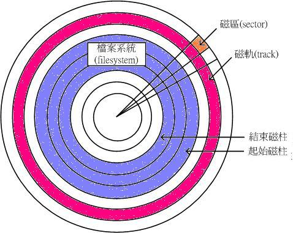
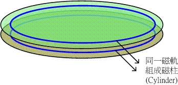
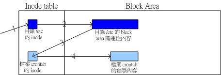
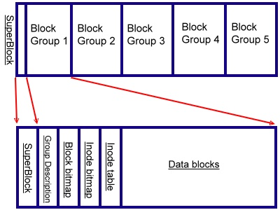

| |
最近更新日期：2006/06/28
本文已不再维护，更新文章请参考此处
|
我们在前面的档案权限介绍的章节当中，提到很多的权限与属性的观念，那么接下来要了解的是，
这些属性是记录在硬盘的那个地方？这里就要特别了解到 Linux 文件系统( filesystem )是如何记录档案，
与档案是如何被读取的啰！而要了解整个文件系统的观念，就不能不知道硬盘的组成组件！
所以，在这个章节当中，我们由最基础的硬盘组成组件介绍起，并介绍 inode 与链接文件等基本知识，
以及如何利用开机即可挂载的方式来使我们的各个 partition 可以在开机时就已经进行好挂载的动作喔！
|
 认识 EXT2 文件系统 认识 EXT2 文件系统
既然这个章节主要在探讨 Linux 的磁盘文件系统，所以我们当然就需要先来了解一下硬盘是个什么东西啦！
首先，我们就来看一看硬盘的物理组成，了解了物理组成之后，再来说明一下怎么样进行硬盘的分割 (partition) 吧！
硬盘物理组成：
就硬盘的物理组件来说， 硬盘其实是由许许多多的圆形硬盘盘所组成的，
依据硬盘盘能够容纳的数据量，而有所谓的单碟 (一块硬盘里面只有一个硬盘盘) 或者是多碟
(一块硬盘里面含有多个硬盘盘)的硬盘。在这里我们以单一个硬盘盘来说明，硬盘盘可由底下的图形来示意：

图一、硬盘盘示意图

图二、磁柱示意图
首先，硬盘里面一定会有所谓的 磁头 ( Head )
在进行该硬盘盘上面的读写动作，而磁头是固定在机械手臂上面的，机械手臂上有多个磁头可以进行读取的动作。
而当磁头固定不动 (假设机械手臂不动) ，硬盘盘转一圈所画出来的圆就是所谓的 磁道(
Track )；而如同我们前面刚刚提到的，一块硬盘里面可能具有多个硬盘盘，
所有硬盘盘上面相同半径的那一个磁道就组成了所谓的 磁柱( Cylinder )。
例如上图二所示意，在两个硬盘盘上面的同一个磁道就是一个磁柱啦！
这个磁柱也是磁盘分区( partition )时的最小单位了；
另外，由圆心向外划直线，则可将磁道再细分为一个一个的 扇区( Sector
)，这个扇区就是硬盘盘上面的最小储存物理量了！
通常一个 sector 的大小约为 512 Bytes 。以上就是整个硬盘的基本组件。
在计算整个硬盘的储存量时，简单的计算公式就是：『 header 数量 * 每个 header 负责的磁柱数量 *
每个磁柱所含有的扇区数量 * 扇区的容量』，单位换算为『header * cylinder/header * secter/cylinder *
512bytes/secter』，简单的写法如下： Cylinder x Head
x Sector x 512 Bytes。另外，硬盘在读取时，主要是『 硬盘盘会转动，
利用机械手臂将磁头移动到正确的数据位置(单方向的前后移动)，然后将数据依序读出。』
在这个操作的过程当中，由于机械手臂上的磁头与硬盘盘的接触是很细微的空间，
如果有抖动或者是脏污在磁头与硬盘盘之间时，就会造成数据的损毁或者是实体硬盘整个损毁～
因此，正确的使用计算机的方式，应该是在计算机通电之后，就绝对不要移动主机，并免抖动到硬盘，
而导致整个硬盘数据发生问题啊！另外，也不要随便将插头拔掉就以为是顺利关机！
因为机械手臂必须要归回原位，所以使用操作系统的正常关机方式，才能够有比较好的硬盘保养啊！
因为他会让硬盘的机械手臂归回原位啊！
磁盘分区 ( Partition )：
在了解了硬盘的物理组件之后，再接着下来介绍的就是硬盘的分割( Partition )啰！
为什么要进行硬盘分割啊？！因为我们必须要告诉操作系统：『
我这块硬盘可以存取的区域是由 A 磁柱到 B 磁柱』，如此一来，
操作系统才能够控制硬盘磁头去 A-B 范围内的磁柱存取数据；如果没有告诉操作系统这个信息，
那么操作系统就无法利用我们的硬盘来进行数据的存取了，
因为操作系统将无法知道他要去哪里读取数据啊！这就是磁盘分区( Partition )的重点了：
也就是记录每一个分割区( Partition )的起始与结束磁柱！
好了，那么这个分割区的起始与结束磁柱的数据放在哪里呢？！那就是我们在
Linux 安装与多重引导技巧 那个章节提到的
主要启动扇区( Master Boot Recorder, MBR )啰！事实上，
MBR 就是在一块硬盘的第零轨上面，这也是计算机开机之后要去利用该硬盘时，
必须要读取的第一个区域！在这个区域内记录的就是硬盘里面的所有分割信息，
以及开机的时候可以进行开机管理程序的写入的处所啊！所以，当一个硬盘的 MBR
坏掉时，由于分割的数据不见了，呵呵，那么这个硬盘也就几乎可以说是寿终正寝了，
因为操作系统不知道该去哪个磁柱上读取数据啊～～
那么 MBR 有什么限制呢？他最大的限制来自于他的大小不够大到储存所有分割与开机管理程序的信息，
因此， MBR 仅提供最多四个 partition 的记忆，这就是所谓的 Primary
(P)与 Extended (E) 的 partition 最多只能有四个的原因了。所以说，如果你预计分割超过
4 个 partition 的话，那么势必需要使用 3P + 1E ，并且将所有的剩余空间都拨给
Extended 才行( 记得呦！ Extended 最多只能有一个 )，否则只要 3P + E 之后还有剩下的空间，
那么那些容量将成为废物而浪费了，所以结论就是『
如果您要分割硬盘时，并且已经预计规划使用掉 MBR 所提供的 4 个
partition ( 3P + E 或 4P )那么磁盘的全部容量需要使用光，否则剩下的容量也不能再被使用』。
不过，如果您仅是分割出 1P + 1E 的话，那么剩下的空间就还能再分割两个 primary partition ！
文件系统：
在告知系统我的 partition 所在的起始与结束磁柱之后，再来则是需要将 partition
格式化为『我的操作系统认识的文件系统( Filesystem )』啰！因为每个操作系统认识的
filesystem 并不相同！例如 Windows 操作系统在默认状态下就无法认识 Linux 的文件系统
( 这里指 Linux 的标准文件系统 ext2 )。所以当然要针对我们的操作系统来格式化 partition 啰！
我们可以说，每一个 partition 就是一个 Filesystem ，那么一个 partition 是否可以具有两个
Filesystem 呢？！理论上应该是不行的！因为每个文件系统都有其独特的支持方式，例如 Linux 的
ext3 就无法被 Windows 系统所读取！而你将一个 partition 格式化的时候，总不能格式化为
ext3 也同时格式化为 fat32 吧？！那是不可能的啊！
不论是哪一种 filesystem ，数据总是需要储存的吧！既然硬盘是用来储存数据的，想当然尔，
数据就必须写入硬盘啦！刚刚我们提到硬盘的最小储存单位是 sector ，不过数据所储存的最小单位并不是
sector 喔，因为用 sector 来储存太没有效率了。怎么说呢？因为一个 sector 只有 512 Bytes
，而磁头是一个一个 sector 的读取，也就是说，如果我的档案有 10 MBytes ，那么为了读这个档案，
我的磁头必须要进行读取 (I/O) 20480 次！
为了克服这个效率上的困扰，所以就有 逻辑区块( Block )的产生了！
逻辑区块是在 partition 进行 filesystem 的格式化时，
所指定的『最小储存单位』，这个最小储存单位当然是架构在 sector 的大小上面(
因为 sector 为硬盘的最小物理储存单位啊！ )，所以啦， Block 的大小为 sector 的 2
的次方倍数。此时，磁头一次可以读取一个 block ，如果假设我们在格式化的时候，指定 Block 为
4 KBytes ( 亦即由连续的八个 sector 所构成一个 block )，那么同样一个 10 MBytes 的档案，
磁头要读取的次数则大幅降为 2560 次，这个时候可就大大的增加档案的读取效能啦！
不过，Block 单位的规划并不是越大越好喔！怎么说呢？因为一个 Block 最多仅能容纳一个档案
(这里指 Linux 的 ext2 文件系统)！这有什么问题呢？举例来说好了，假如您的 Block 规划为
4 KBytes ，而您有一个档案大小为 0.1 KBytes ，这个小档案将占用掉一个 Block 的空间，也就是说，该
Block 虽然可以容纳 4 Kbytes 的容量，然而由于档案只占用了 0.1 Kbytes ，所以，实际上剩下的
3.9 KBytes 是不能再被使用了，所以，在考虑 Block 的规划时，需要同时考虑到：
因此，在规划您的磁盘时，需要留意到您主机的用途来进行规划较佳！例如 BBS 主机由于文章较短，
也就是说档案较小，那么 Block 小一点的好；而如果您的主机主要用在储存大容量的档案，
那么考虑到效能，当然 Block 理论上，规划的大一点会比较妥当啦！
Superblock：如同前面说的，当我们在进行磁盘分区(
partition )时，每个磁盘分区槽( partition )就是一个文件系统( filesystem )，
而每个文件系统开始的位置的那个 block 就称为 superblock ，superblock
的作用是储存像是文件系统的大小、空的和填满的区块，以及他各自的总数和其他诸如此类的信息等等，
这也就是说，当您要使用这一个磁盘分区槽( 或者说是文件系统 )来进行数据存取的时候，第一个要经过的就是
superblock 这个区块了，所以啰， superblock 坏了，您的这个磁盘槽大概也就回天乏术了！
Linux 的 EXT2 文件系统( inode )：
看完了上面的说明，您应该对于硬盘有一定程度的认识了！好了，那么接下来就是要谈一谈
Linux 的文件系统( Filesystem )啰！我们这里以 Linux 最标准的 ext2 这个文件系统来作为说明。还记得我们在
Linux 文件属性与目录配置 那个章节提到的，在
Linux 系统当中，每个档案不止有档案的内容数据，还包括档案的种种属性，例如：所属群组、
所属使用者、能否执行、档案建立时间、档案特殊属性等等。由于
Linux 操作系统是一个多人多任务的环境，为了要保护每个用户所拥有数据的隐密性，
所以具有多样化的文件属性是在所难免的！在标准的
ext2 文件系统当中，我们将每个档案的内容分为两个部分来储存，一个是档案的属性，另一个则是档案的内容。
为了应付这两个不同的咚咚，所以 ext2 规划出 inode 与 Block 来分别储存档案的属性( 放在 inode 当中
)与档案的内容( 放置在 Block area 当中 )。当我们要将一个 partition 格式化( format )为 ext2
时，就必须要指定 inode 与 Block 的大小才行，也就是说， 当 partition
被格式化为 ext2 的文件系统时，他一定会有 inode table 与 block area 这两个区域。
Block 已经在前面说过了，他是数据储存的最小单位。那么 inode 是什么？！简单的说，
Block 是记录『档案内容数据』的区域，至于 inode
则是记录『该档案的相关属性，以及档案内容放置在哪一个 Block 之内』的信息。
简单的说， inode 除了记录档案的属性外，同时还 必须要具有指向( pointer
)的功能，亦即指向档案内容放置的区块之中，好让操作系统可以正确的去取得档案的内容啊！
底下几个是 inode 记录的信息(当然不止这些)：
- 该档案的拥有者与群组(owner/group)；
- 该档案的存取模式(read/write/excute)；
- 该档案的类型(type)；
- 该档案建立或状态改变的时间(ctime)、最近一次的读取时间(atime)、最近修改的时间(mtime)；
- 该档案的容量；
- 定义档案特性的旗标(flag)，如 SetUID...；
- 该档案真正内容的指向 (pointer)；
我们在前一章 Linux 档案与目录管理 当中提到过利用 ls
查询档案所记载的时间，就是 atime / ctime / mtime 三种时间。这三种时间的意义我们已经在前一章的
touch 指令介绍时提过，这三种时间就是记录在 inode 里面的啦～
如果回到前一章，您会发现，我们可以利用 ls
的相关功能来查询到时间喔！而默认的显示时间是 mtime 。
[root@linux ~]# ls -la --time=atime PATH
|
那个 PATH 是您所想要查询的档案或目录名称。利用上面的 ls
相关参数，就可以取得您想要知道的档案相关的三种时间啰～
至于 一个 inode 的大小为 128 bytes 这么大 (可以使用底下要介绍的
dumpe2fs 来查阅 inode 的大小喔！) ！好了，那么我的
Linux 系统到底是如何读取一个档案的内容呢？底下我们分别针对目录与档案来说明：
- 目录：
当我们在 Linux 下的 ext2 文件系统建立一个目录时， ext2 会分配一个 inode
与至少一块 Block 给该目录。其中，inode 记录该目录的相关属性，并指向分配到的那块
Block ；而 Block 则是记录在这个目录下的相关连的档案(或目录)的关连性！
- 档案：
当我们在 Linux 下的 ext2 建立一个一般档案时， ext2 会分配至少一个 inode
与相对于该档案大小的 Block 数量给该档案。例如：假设我的一个 Block 为 4 Kbytes
，而我要建立一个 100 KBytes 的档案，那么 linux 将分配一个 inode 与
25 个 Block 来储存该档案！
要注意的是， inode 本身并不纪录文件名，而是记录档案的相关属性，至于文件名则是记录在目录所属的 block 区域！
那么档案与目录的关系又是如何呢？就如同上面的目录提到的，档案的相关链接会记录在目录的 block 数据区域，
所以当我们要读取一个档案的内容时，我们的 Linux 会先由根目录 / 取得该档案的上层目录所在 inode ，
再由该目录所记录的档案关连性 (在该目录所属的 block 区域) 取得该档案的 inode ，
最后在经由 inode 内提供的 block 指向，而取得最终的档案内容。我们以 /etc/crontab 这个档案的读取为例，
他的内容资料是这样取得的：

图三、读取 /etc/crontab 的简易流程示意。
一块 partition 在 ext2 底下会被格式化为 inode table 与 block area 两个区域，
所以在图三里面，我们将 partition 以长条的方式来示意，会比较容易理解的啦！而读取
/etc/crontab 的流程为：
- 操作系统根据根目录( / )的相关资料可取得 /etc 这个目录所在的 inode ，并前往读取
/etc 这个目录的所有相关属性；
- 根据 /etc 的 inode 的资料，可以取得 /etc 这个目录底下所有档案的关连数据是放置在哪一个
Block 当中，并前往该 block 读取档案的关连性内容；
- 由上个步骤的 Block 当中，可以知道 crontab 这个档案的 inode 所在地，并前往该 inode ；
- 由上个步骤的 inode 当中，可以取得 crontab 这个档案的所有属性，并且可前往由 inode 所指向的
Block 区域，顺利的取得 crontab 的档案内容。
整个读取的流程大致上就是这样，如果您想要实作一下以了解整个流程的话，可以这样试做看看：
1. 察看一下根目录所记载的所有档案关连性数据
[root@linux ~]# ls -lia /
2 drwxr-xr-x 24 root root 4096 Jul 16 23:45 .
2 drwxr-xr-x 24 root root 4096 Jul 16 23:45 ..
719489 drwxr-xr-x 83 root root 12288 Jul 21 04:02 etc
523265 drwxr-xr-x 24 root root 4096 Jun 25 20:16 var
# 注意看一下，在上面的 . 与 .. 都是链接到 inode 号码为 2 的那个 inode ，
# 也就是说， / 与其上层目录 .. 都是指向同一个 inode number 啊！两者是相同的。
# 而在根目录所记载的档案关连性 (在 block 内) 得到 /etc 的 inode number
# 为 719489 那个 inode number 喔！
2. 察看一下 /etc/ 内的档案关连性的数据
[root@linux ~]# ls -liad /etc/crontab /etc/.
719489 drwxr-xr-x 83 root root 12288 Jul 21 04:02 /etc/.
723496 -rw-r--r-- 1 root root 663 Jul 4 12:03 /etc/crontab
# 瞧！此时就能够将 /etc/crontab 找到关连性啰！
|
所以您知道， 目录的最大功能就是在提供档案的关连性，在关连性里面，
当然最主要的就是『档名与 inode 的对应数据』啰！另外，关于 EXT2
文件系统，这里有几点小事情要提醒一下：
- ext2 与 ext3 档案在建立时 (format) 就已经设定好固定的 inode 数与 block 数目了；
- 格式化 Linux 的 ext2 文件系统，可以使用 mke2fs 这个程序来执行！
- ext2 允许的 block size 为 1024, 2048 及 4096 bytes；
- 一个 partition (filesystem) 所能容许的最大档案数，与 inode 的数量有关，
因为一个档案至少要占用一个 inode 啊！
- 在目录底下的档案数如果太多而导致一个 Block 无法容纳的下所有的关连性数据时，Linux
会给予该目录多一个 Block 来继续记录关连数据；
- 通常 inode 数量的多寡设定为 (partition 的容量) 除以 (一个 inode 预计想要控制的容量)。
举例来说，若我的 block 规划为 4Kbytes，假设我的一个 inode 会控制两个 block
，亦即是假设我的一个档案大致的容量在 8Kbytes 左右时，假设我的这个 partition 容量为 1GBytes，
则 inode 数量共有：( 1G * 1024M/G * 1024K/M ) / ( 8K ) = 131072 个。而一个 inode 占用 128 bytes
的空间，因此格式化时就会有 ( 131072个 * 128bytes/个 ) = 16777216 byes = 16384 Kbytes
的 inode table 。也就是说，这一个 1GB 的 partition 在还没有储存任何数据前，
就已经少了 16MBytes 的容量啊！
- 因为一个 inode 只能记录一个档案的属性，所以 inode 数量比 block 多是没有意义的！
举上面的例子来说，我的 Block 规划为 4 Kbytes ，所以 1GB 大概就有 262144 个 4Kbytes 的
block ，如果一个 block 对应一个 inode 的话，那么当我的 inode 数量大于 262144 时，多的
inode 将没有任何用处，徒然浪费硬盘的空间而已！另外一层想法，如果我的档案容量都很大，
那么一个档案占用一个 inode 以及数个 block ，当然 inode 数量就可以规划的少很多啦！
- 当 block 大小越小，而 inode 数量越多，则可利用的空间越多，但是大档案写入的效率较差；
这种情况适合档案数量多，但是档案容量小的系统，例如 BBS 或者是新闻组( News )这方面服务的系统；
- 当 Block 大小越大，而 inode 数量越少时，大档案写入的效率较佳，但是可能浪费的硬盘空间较多；
这种状况则比较适合档案容量较大的系统！
简单的归纳一下， ext2 有几个特色：
- Blocks 与 inodes 在一开始格式化时 (format) 就已经固定了；
- 一个 partition 能够容纳的档案数与 inode 有关；
- 一般来说，每 4Kbytes 的硬盘空间分配一个 inode ；
- 一个 inode 的大小为 128 bytes；
- Block 为固定大小，目前支持 1024/2048/4096 bytes 等；
- Block 越大，则损耗的硬盘空间也越多。
- 关于单一档案：
若 block size=1024，最大容量为 16GB，若 block size=4096，容量最大为 2TB；
- 关于整个 partition ：
若 block size=1024，则容量达 2TB，若 block size=4096，则容量达 32TB。
- 文件名最长达 255 字符，完整文件名长达 4096 字符。
另外，关于 partition 的使用效率上，当您的一个 partition 规划的很大时，例如 100GB 这么大，
由于硬盘上面的数据总是来来去去的，所以，整个 partition 上面的档案通常无法连续写在一起，
而是填入式的将数据填入没有被使用的 block 当中。如果档案写入的 block 真的分的很散，
此时就会有所谓的 档案离散的问题发生了。虽然我们的 ext2 在
inode 处已经将该档案所记录的 block number
都记上了，所以资料可以一次性读取，但是如果档案真的太过离散，确实还是会发生读取效率低落的问题。
果真如此，那么可以将整个 partition 内的数据全部复制出来，将该 partition 重新格式化，
再将数据给他复制回去即可解决。
此外，如果 partition 真的太大了，那么当一个档案分别记录在这个 partition 的最前面与最后面的 block，
此时会造成硬盘的机械手臂移动幅度过大，也会造成数据读取效能的低落。因此， partition 的规划并不是越大越好，
而是真的要针对您的主机用途来进行规划才行！^_^
EXT2/EXT3
档案的存取与日志式文件系统的功能
综合上面谈的种种，我们可以知道，当一个 ext2 的 filesystem 被建立时，
他拥有 superblock / group description / block bitmap / inode bitmap / inode table / data blocks
等等区域。要注意的是，每个 ext2 filesystem 在被建立的时候，会依据 partition 的大小，
给予数个 block group ，而每个 block group 就有上述的这些部分。整个 filesystem 的架构可以下图展现：

图四、整个 filesystem 的展现示意图
我们将整个 filesystem 简单化，
假设仅有一个 block group ，那么上面的各个部分分别代表什么呢？
- SuperBlock：如前所述， Superblock 是记录整个 filesystem 相关信息的地方，
没有 Superblock ，就没有这个 filesystem 了。他记录的信息主要有：
- block 与 inode 的总量；
- 未使用与已使用的 inode / block 数量；
- 一个 block 与一个 inode 的大小；
- filesystem 的挂载时间、最近一次写入数据的时间、最近一次检验磁盘 (fsck) 的时间等文件系统的相关信息；
- 一个 valid bit 数值，若此文件系统已被挂载，则 valid bit 为 0 ，若未被挂载，则
valid bit 为 1 。
- Group Description：纪录此 block 由由何处开始记录；
- Block bitmap：此处记录那个 block 有没有被使用；
- Inode bitmap：此处记录那个 inode 有没有被使用；
- Inode table：为每个 inode 数据存放区；
- Data Blocks：为每个 block 数据存放区。
如果想要知道某个 ext2/ext3 的文件系统内，关于上述提到的相关信息时，可以使用 dumpe2fs
这个指令来读取，举例来说，鸟哥将我自己的主机 /dev/hda1 读出 ext3 的讯息：
[root@linux ~]# dumpe2fs /dev/hda1
Filesystem volume name: /
Filesystem state: clean
Errors behavior: Continue
Filesystem OS type: Linux
Inode count: 1537088
Block count: 1536207
Free blocks: 735609
Free inodes: 1393089
First block: 0
Block size: 4096
Filesystem created: Sat Jun 25 16:21:13 2005
Last mount time: Sat Jul 16 23:45:04 2005
Last write time: Sat Jul 16 23:45:04 2005
Last checked: Sat Jun 25 16:21:13 2005
First inode: 11
Inode size: 128
Journal inode: 8
Group 0: (Blocks 0-32767)
Primary superblock at 0, Group descriptors at 1-1
Reserved GDT blocks at 2-376
Block bitmap at 377 (+377), Inode bitmap at 378 (+378)
Inode table at 379-1400 (+379)
0 free blocks, 32424 free inodes, 11 directories
Free blocks:
Free inodes: 281-32704
Group 1: (Blocks 32768-65535)
Backup superblock at 32768, Group descriptors at 32769-32769
Reserved GDT blocks at 32770-33144
Block bitmap at 33145 (+377), Inode bitmap at 33146 (+378)
Inode table at 33147-34168 (+379)
18 free blocks, 24394 free inodes, 349 directories
Free blocks: 37882-37886, 38263-38275
Free inodes: 38084-38147, 39283-39343, 41135, 41141-65408
# 因为数据很多，所以鸟哥略去了一些信息了～上面是比较精简的显示内容。
# 在 Group 0 之前的都是 Superblock 的内容，记录了 inode/block 的总数，
# 还有其他相关的讯息。至于由 Group 0 之后，则是说明各个 bitmap 及 inode table
# 与 block area 等等。
|
透过这些记录，我们可以很轻易的就知道哪些 inode 没有被使用，哪些 block 还可以记录，
如此一来，在新增、建立档案与目录时，系统就会根据这些记录来将数据分别写入尚未被使用的
inode 与 block area 了！
不过，要注意的是，当我们新增一个档案(目录)时：
- 根据 inode bitmap / block bitmap 的信息，找到尚未被使用的 inode 与 block ，
进而将档案的属性与数据分别记载进 inode 与 block ；
- 将刚刚被利用的 inode 与 block 的号码 (number) 告知 superblock、inode bitmap、block bitmap
等，让这些 metadata 更新信息。
一般来说，我们将 inode table 与 block area 称为数据存放区域，至于其他的例如 superblock、
block bitmap 与 inode bitmap 等记录就被称为 metadata 啰。经由上面两个动作，我们知道一笔数据写入硬盘时，
会有这两个动作。
数据的不一致 (Inconsistent) 状态
那么万一您的档案在写入硬盘时，因为不知名原因导致系统中断(例如突然的停电啊、
系统核心发生错误啊～等等的怪事发生时)，所以数据就只有纪录到动作一，而动作二尚未进行～
这就会产生 metadata 与数据存放区产生 不一致 (Inconsistent)
的情况发生了。
在早期的 EXT2 文件系统中，如果发生这个问题，那么系统在重新启动的时候，
就会藉由 Superblock 当中记录的 valid bit 与 filesystem state
等状态来判断是否强制进行数据一致性的检查！检查则以 e2fsck 这支程序来进行的。
不过，这样的检查真的是很费时～因为要针对 metadata 区域与实际数据存放区来进行比对，
呵呵～得要搜寻整个 partition 呢～哇！系统真忙碌～而且在对 Internet 提供服务的服务器主机上面，
这样的检查真的会造成主机复原时间的拉长～真是麻烦～这也就造成后来所谓日志式文件系统的兴起了。
稍微了解了所谓数据不一致的状态后，再来要了解的，就是，那么为何要有日志式文件系统的产生呢？
我们已经在 Linux 文件属性与目录配置 当中提到过一些文件系统的注意事项，
也提过日志式 (Journal) 文件系统的相关功能，这里我们再稍微深入的讨论一下。
刚刚提到了，在 EXT2 文件系统当中，要进行档案的写入时，会将数据分别在数据存放区与 metadata 区记录下来，
若当这两个动作无法一次完成时，就会造成所谓的不一致现象。若发生不一致现象，
因为系统不知道是那个档案发生不一致现象，所以就会将整个 filesystem 做一致性的检查，如此一来，很费时啊！
想一想，如果在我们的 filesystem 当中，要是能够规划出一个区块，专门来记录写入或修订档案时的步骤，
那不就可以简化一致性检查的步骤了？也就是说：
- 当系统要写入一个档案的时候，会先在日志记录区块中纪录：某个档案准备要写入磁盘了；
- 开始写入档案的权限与数据；
- 开始更新 metadata 的数据；
- 完成数据与 metadata 的更新后，在日志记录区块当中完成该档案的纪录。
在这样的程序当中，万一数据的纪录过程当中发生了问题，那么我们的系统只要去检查日志记录区块，
就可以知道那个档案发生了问题，针对该问题来做一致性的检查即可，而不必针对整块 filesystem 去检查，
真的就可以达到快速修复 filesystem 的能力了！这就是日志式档案最基础的功能啰～
那么我们的 ext2 可达到这样的功能吗？当然可以啊！
就透过 ext3 即可！ ext3 是 ext2 的升级版本，并且可向下兼容 ext2 版本呢！
所以啰，目前我们才建议大家，可以直接使用 ext3 这个 filesystem 啊！ ^_^
如果您对于 EXT2 / EXT3 系统还有更多的兴趣，可以参考底下这几篇文章：
或者参考鸟哥由网络上面找到的相关中文翻译，不过.....原发文者的文章出处已经找不到了～
真是不好意思～请参考： 附录 B：EXT2/EXT3 文件系统。
Linux 文件系统的运作：
好了，我们知道整个 ext2/ext3 的数据存取是透过 journal 与 metadata 还有数据存放区在纪录的。
不过，实际上， Linux 文件系统在运作的时候，真的要将数据直接存放到硬盘上面吗？！
有没有更有效率的作法？
我们来看看整部计算机的运作当中，那个数据的访问速度最慢呢？数据处理最快速的地方应该是 CPU 了，
接下来则是主存储器 (RAM) ，至于硬盘，哈哈！没错，速度可是比 CPU 还有 RAM 要慢的很多很多。
为了让 Linux 加快整个系统的存取效率，因此在 Linux 上面通常采取异步处理( asynchronously
)的方式。
什么是异步呢？举例来说：『当系统读取了某一个档案，
则该档案所在的区块数据会被加载到内存当中，所以该磁盘区块就会被放置在主存储器的缓冲快取区中，
若这些区块的数据被改变时，刚开始数据仅有主存储器的区块数据会被改变，
而且在缓冲区当中的区块数据会被标记为『 Dirty 』，这个时候磁盘实体区块尚未被修正！
所以亦即表示，这些『 Dirty 』区块的数据必需回写到磁盘当中，
以维持磁盘实体区块上的数据与主存储器中的区块数据的一致性。』
为什么要这么做呢？这是因为主存储器的运作速度比起硬盘来实在是快太多了，
万一系统当中有一个档案相当的大，而又持续性的存取，那么由于较慢的硬盘访问速度，将使得整个
Linux 速度被拖垮，所以才会使用异步方式的数据处理啊！不过，
也由于硬盘与主存储器的数据可能没有同步化，因此，如果 Linux 不正常关机( 例如跳电或者是当机
)时，则由于数据尚未回写入磁盘当中，会导致系统在再次开机时，会花相当多的时间进行磁盘检验，
同时也有可能造成磁盘的损毁啊！
挂载点的意义 (mount point)：
我们上面提到的都是关于文件系统 (filesystem)，但是要能够让我们的 Linux 使用的话，
非得『 挂载 (mount)』上我们的 Linux 系统才行啊！
刚刚我们上面提到了目录可以记录文件名与 inode 的相关信息，此外，
目录也是让我们得以跟 filesystem 产生对应的入口点。因此，我们称那个入口点目录为『
挂载点 (mount point) 』
举例来说，在鸟哥的 安装 FC4 范例当中，我们将硬盘分割为几大部分，
同时主要将 / 与 /home 设定为两个 partition 的挂载点。假设 / 是接在 /dev/hda1 ，
而 /home 是接在 /dev/hda2 上面，那么，也就是说，在 /home 底下的所有次目录，使用的都是
/dev/hda2 那个 partition 的资料呢！而非 /home 的则都是使用 /dev/hda1 的数据！
那么来看看系统中如果主要分为 / 与 /home 时，他们对应的 inode 会有什么现象呢？
[root@linux ~]# ls -lid / /home
2 drwxr-xr-x 26 root root 4096 7月 21 09:08 /
2 drwxr-xr-x 42 root root 4096 7月 14 23:37 /home
|
看到了吧？咦！怎么 / 与 /home 的 inode number 都是 2 啊？？这太不合理了～
原因很简单啊！因为 / 是 /dev/hda1 而 /home 是 /dev/hda2 ，这两个 partition 都有
inode number 为 2 的号码啊！所以啊，请注意，
挂载点一定是『目录』而不是档案喔！
也就是说，这个挂载点就是进入该 filesystem 的入口啦！
其他 Linux 支持的文件系统
虽然 Linux 的标准文件系统是 ext2 ，且还有增加了日志功能的 ext3 之外，事实上，Linux 还有支持很多文件格式的，
尤其是最近这几年推出了好几种速度很快的日志式文件系统，包括 SGI 的 XFS 文件系统，
可以适用更小型档案的 Reiserfs 文件系统，以及 Windows 的 FAT 文件系统等等，
都能够被 Linux 所支持喔！常见的支持文件系统有：
- 传统文件系统：ext2 / minix / MS-DOS / FAT (用 vfat 模块) / iso9660 (光盘)等等；
- 日志式文件系统： ext3 / ReiserFS / Windows' NTFS / IBM's JFS / SGI's XFS
- 网络文件系统： NFS / SMBFS
想要知道您的 Linux 支持的文件系统有哪些，可以察看底下这个目录：
[root@linux ~]# ls -l /lib/modules/`uname -r`/kernel/fs
|
系统目前已启用的文件系统则有：
[root@linux ~]# cat /proc/filesystems
|
假设您的 / 使用的是 /dev/hda1 ，用 ext3 ，而 /home 使用 /dev/hda2 ，用 reiserfs ，
那么您取用 /home/dmtsai/.bashrc 时，有特别指定要用的什么文件系统的模块来读取吗？！
应该是没有吧！嘿嘿！这个就是我们 Linux kernel 的 Virtual Filesystem Switch (VFS)
的功能啦！透过这个 VFS 的功能来管理所有的 filesystem，
省去我们需要自行设定读取文件系统的定义啊～方便很多！
文件系统的简单操作：
在了解了一些简单的硬盘与文件系统的概念之后，并且知道如何以 ls 查询文件系统相关的信息后，
接下来就是得要了解如何知道整个磁盘的剩余容量与总容量啰～此外，也得要知道一下，前一章还没有介绍到的连结档
(link file) 啰～
磁盘与目录的容量：
在文字接口底下有什么方法可以查看目前的磁盘最大容许容量、已经使用掉的容量、
目前所在目录的已使用容量？还有还有，怎么知道目前目录底下使用掉的硬盘容量呢？
以及如何查询目前的 inodes 数目？呵呵！底下我们就来谈一谈主要的两个指令：
df
[root@linux ~]# df [-ahikHTm] [目录或文件名]
参数：
-a ：列出所有的文件系统，包括系统特有的 /proc 等文件系统；
-k ：以 KBytes 的容量显示各文件系统；
-m ：以 MBytes 的容量显示各文件系统；
-h ：以人们较易阅读的 GBytes, MBytes, KBytes 等格式自行显示；
-H ：以 M=1000K 取代 M=1024K 的进位方式；
-T ：连同该 partition 的 filesystem 名称 (例如 ext3) 也列出；
-i ：不用硬盘容量，而以 inode 的数量来显示
范例：
范例一：将系统内所有的 partition 列出来！
[root@linux ~]# df
Filesystem 1K-blocks Used Available Use% Mounted on
/dev/hda1 5952252 3012332 2632680 54% /
/dev/shm 192836 0 192836 0% /dev/shm
/dev/hda5 9492644 221604 8781060 3% /home
# 特别注意，在 Linux (FC4) 底下，如果 df 没有加任何参数，
# 那么默认会将系统内所有的 (不含特殊内存内的文件系统与 swap) 都以 Kbytes
# 的容量来列出来！至于那个 /dev/shm 是与内存有关的挂载，先不要理他！
范例二：将容量结果以易读的容量格式显示出来
[root@linux ~]# df -h
Filesystem Size Used Avail Use% Mounted on
/dev/hda1 5.7G 2.9G 2.6G 54% /
/dev/shm 189M 0 189M 0% /dev/shm
/dev/hda5 9.1G 217M 8.4G 3% /home
# 不同于范例一，这里会以 G/M 等容量格式显示出来，比较容易看啦！
范例三：将系统内的所有特殊文件格式及名称都列出来
[root@linux ~]# df -aT
Filesystem Type 1K-blocks Used Available Use% Mounted on
/dev/hda1 ext3 5952252 3012332 2632680 54% /
/dev/proc proc 0 0 0 - /proc
/dev/sys sysfs 0 0 0 - /sys
/dev/devpts devpts 0 0 0 - /dev/pts
/dev/shm tmpfs 192836 0 192836 0% /dev/shm
/dev/hda5 ext3 9492644 221604 8781060 3% /home
none binfmt_misc 0 0 0 - /proc/sys/fs/binfmt_misc
# 看到了吧！系统里面其实还有很多的特殊文件系统在跑得！
# 不过，那些比较特殊的文件系统几乎都是在内存当中，例如 /proc 这个挂载点。
# 因此，这些特殊的文件系统都不会占据硬盘空间喔！ ^_^
范例四：将 /etc 底下的可用的磁盘容量以易读的容量格式显示
[root@linux ~]# df -h /etc
Filesystem Size Used Avail Use% Mounted on
/dev/hda1 5.7G 2.9G 2.6G 54% /
# 这个范例比较有趣一点啦，在 df 后面加上目录或者是档案时， df
# 会自动的分析该目录或档案所在的 partition ，并将该 partition 的容量显示出来，
# 所以，您就可以知道某个目录底下还有多少容量可以使用了！ ^_^
范例五：将目前各个 partition 当中可用的 inode 数量列出
[root@linux ~]# df -ih
Filesystem Inodes IUsed IFree IUse% Mounted on
/dev/hda1 1.5M 141K 1.4M 10% /
/dev/shm 48K 1 48K 1% /dev/shm
/dev/hda5 2.4M 67 2.4M 1% /home
|
这是用来显示目前磁盘的总容量与剩余可用容量的指令！需要注意的是，
由于我们的档案或者是外挂的磁盘都是加在『 / 』底下，所以当根目录没有空间的时候，
嘿嘿！你的 Linux 系统可能大概就要挂了吧～当然啰！你可以将你的数据放置在加挂的硬盘中，
那么如何知道目前哪一个磁盘还有多少空间呢？！
Tips:
说个笑话！当初我们系上有个研究生在管理 Sun 的工作站，是别研究室的，
他的硬盘明明有好几 GB ，但是就是没有办法将几 MB 的数据 copy 进去，
他就去跟老板讲说机器坏了！嘿！明明才来维护过几天而已为何会坏了！
结果老板将维护商叫来骂了 2 小时左右吧！后来，维护商发现原来硬盘的『总空间』还有很多，
只是某个扇区填满了，偏偏该研究生就是要将数据 copy 去那个扇区！呵呵！
后来那个研究生就被命令『再也不许碰 Sun 主机』了～～
|  |
这里要请大家再复习一下，我们的硬盘扇区规划中， primary 扇区每一颗硬盘最多只允许
4 个，其他的就放置在 Extended 扇区中了！而，硬盘的代号与 IDE 的插槽是有关系的！
如果忘记了，那就回 去安装 Linux
那一章复习一下吧！好了！假设我只有一棵硬盘，且放在 IDE 的 master ，那么我的硬盘就是
/dev/hda 啰！而在这颗硬盘中的分割扇区就可以由 /dev/hda1 开始向上加！
OK，那么使用 df -k 之后，假设我的硬盘分为 /dev/hda1, /dev/hda2, /dev/hda3, /dev/hda5 与
/dev/hda6 ，咦！ /dev/hda4 跑去哪里了！呵呵！其实 /dev/hda4 通常就是 Extended
扇区啦！而后面的 /dev/hda5, /dev/hda6 等扇区就是由 /dev/hda4 所切出来的！所以
/dev/hda5 + /dev/hda6 = /dev/hda4 ！当然，如果还有没有显示出来的，例如 Swap ，则
/dev/hda4 还有可能更大呦！
那么来解释一下上面的数据吧！
- Filesystem：代表该文件系统是在那个 partition 啊，所以列出装置名称；
- 1k-blocks：说明底下的数字单位是 1KB 呦！可利用 -h 或 -m 来改变容量；
- Used：顾名思义，就是使用掉的硬盘空间啦！
- Available：也就是剩下的磁盘空间大小；
- Use%：就是磁盘的使用率啦！如果使用率高达 90% 以上时，
最好需要注意一下了，免得容量不足造成系统问题喔！
(例如最容易被灌爆的 /var/spool/mail 这个放置邮件的磁盘)
- Mounted on：就是磁盘挂载的目录所在啦！(挂载点啦！)
另外，需要注意的是，如果使用 -a 这个参数时，系统会出现 /proc 这个扇区，但是里面的东西都是
0 ，不要紧张！ /proc 的东西都是 Linux 系统所需要加载的系统数据，而且是挂载在『内存当中』的，
所以当然没有占任何的硬盘空间啰！
du
[root@linux ~]# du [-ahskm] 档案或目录名称
参数：
-a ：列出所有的档案与目录容量，因为默认仅统计目录底下的档案量而已。
-h ：以人们较易读的容量格式 (G/M) 显示；
-s ：列出总量而已，而不列出每个各别的目录占用容量；
-k ：以 KBytes 列出容量显示；
-m ：以 MBytes 列出容量显示；
范例：
范例一：列出目前目录下的所有档案容量
[root@linux ~]# du
[root@vbird ~]# du
16 ./.gnome2
16 ./.ssh
.......中间省略........
292 .
# 直接输入 du 没有加任何参数时，则 du 会分析『目前所在目录』
# 的档案与目录所占用的硬盘空间。但是，实际显示时，仅会显示目录容量，
# 但我的 . 目录有很多档案没有被列出来，所以，全部的目录相加不会等于 . 的容量喔！
范例二：同范例一，但是将档案的容量也列出来
[root@linux ~]# du -a
12 ./install.log.syslog
16 ./.gnome2
16 ./.ssh
76 ./install.log
16 ./.bash_history
4 ./.bashrc
.......中间省略........
292 .
# 加上这个 -a 参数后，就会将目录底下的档案也一起列示出来，
# 而不是仅列出档案信息而已！注意啰～ ^_^
范例三：检查根目录底下每个目录所占用的容量
[root@linux ~]# du -sm /*
7 /bin
14 /boot
.......中间省略........
385 /proc
.......中间省略........
1 /tmp
2944 /usr
79 /var
# 这是个很常被使用的功能啰～利用通配符 * 来代表每个目录，
# 所以，如果想要检查某个目录下，那个次目录占用最大的容量，就可以用这个方法找出来
# 值得注意的是，如果您刚刚安装好 Linux 时，那么整个系统容量最大的应该是 /usr
# 那个目录，而 /proc 虽然有列出容量，但是那个容量是在内存中，不占硬盘空间。
|
在 Windows 底下可以使用档案总管来管理你的磁盘，在 Linux 底下也可以轻易的以 du
来知道目前磁盘的档案容量耶！在默认的情况下，容量的输出是以 KB 来设计的，
如果你想要知道目录占了多少 MB ，那么就使用 -m 这个参数即可啰！而，
如果你只想要知道该目录占了多少容量的话，呵呵，使用 -s 就可以啦！另外，
如同上面的范例三，可以利用通配符 * 来加快你的搜寻喔！
连结档的介绍： ln
什么是连结档呢？其实连结档有点类似 Windows 底下的『快捷方式』！也就是很多的连结档案(
link file )其实都指向同一个来源档案( source file )！不过，在所有的文件类型当中，
连结档算是比较难理解的一部份了！因为连结档还分成 Hard link 与 symbolic link
两种，这两种连结档在架构上是完全不一样的咚咚，底下就来好好的谈一谈先！
Hard Link (硬式连结或实际连结)
在前一节当中，我们提到档案的读取方式为：
- 先由一层一层的目录取得档案相关的关连数据，
- 再到对应的 inode 取得档案的属性，以及档案内容数据所在的 Block ，
- 最后到 Block area 取得档案的数据。
那么 hard link 怎么制作档案的连结呢？！很简单，
Hard Link 只是在某个目录下新增一个该档案的关连数据而已！
举个例子来说，假设我的 /root/crontab 为一个 hard link 的档案，他连结到
/etc/crontab 这个档案，也就是说，其实 /root/crontab 与 /etc/crontab
是同一个档案，只是有两个目录( /etc 与 /root )记录了 crontab
这个档案的关连数据罢了！也就是说，我由 /etc 这个目录所记录的关连数据可知道 crontab 的
inode 放置在 A 处，而由 /root 这个目录下的关连数据， crontab 同样也指到
A 处的 inode ！所以啰， crontab 这个档案的 inode 与 block 都没有改变，
有的只是有两个目录记录了关连数据。
那这样有什么好处呢？最大的好处就是『安全！』如同上面提到的 /root/crontab 与 /etc/crontab 中，
不管哪一个档案被删除了，其实仅是移除一笔目录底下的档案关连性数据，并没有更动到原本档案的
inode 与 block 资料呢！而且，不论由那个目录链接到正确的 crontab 的 inode 与 block ，
都可以正确无误的进行数据的修改喔！ ^_^
一般来说，使用 hard link 设定链接文件时，磁盘的空间与 inode 的数目都不会改变！
由上面的说明来看，我们可以知道， hard link 只是在某个目录下的 block
多写入一个关连数据，所以当然不会用掉 inode 与磁盘空间啰！
Tips:
其实可能会改变的，那就是当目录的 Block 被用完时，就可能会新加一个 block
来记录，而导致磁盘空间的变化！不过，一般 hard link 所用掉的关连数据量很小，所以通常不会改变
inode 与磁盘空间的大小喔！
| |
由于 hard link 是在同一个 partition 上面进行数据关连的建立，所以 hard link 是有限制的：
- 不能跨 Filesystem；
- 不能 link 目录。
不能跨 Filesystem 还好理解，因为 hard link 本来就是在一个 partition 内建立关连性的，
那不能 hard link 到目录又是怎么回事呢？这是因为如果使用 hard link 链接到目录时，
链接的数据被需要连同被链接目录底下的所有数据都建立链接，举例来说，如果你要将 /etc
使用硬式链接建立一个 /etc_hd 的目录时，那么在 /etc_hd 底下的所有数据同时都与 /etc
底下的数据要建立 hard link 的，而不能仅是连结到 /etc_hd 与 /etc 而已。
并且，未来如果需要在 /etc_hd 底下建立新档案时，连带的，
/etc 底下的数据又得要建立一次 hard link ，因此造成环境相当大的复杂度。
所以啰，目前 hard link 对于目录暂时还是不支持的啊！
Symbolic Link (符号链接，亦即是快捷方式)
相对于 hard link ， Symbolic link 可就好理解多了，基本上，
Symbolic link 就是在建立一个独立的档案，
而这个档案会让数据的读取指向他 link 的那个档案内容！由于只是利用档案来做为指向的动作，
所以，当来源档被删除之后，symbolic link 的档案会『开不了』，
会一直说『无法开启某档案！』。这里还是得特别留意，这个 Symbolic Link 与 Windows
的快捷方式可以给他划上等号，由 Symbolic link 所建立的档案为一个独立的新的档案，所以会占用掉
inode 与 block 喔！
由上面的说明来看，似乎 hard link 比较安全，因为即使某一个目录下的关连数据被杀掉了，
也没有关系，只要有任何一个目录下存在着关连数据，那么该档案就不会不见！举上面的例子来说，我的
/etc/crontab 与 /root/crontab 指向同一个档案，如果我删除了 /etc/crontab
这个档案，该删除的动作其实只是将 /etc 目录下关于 crontab 的关连数据拿掉而已，
crontab 所在的 inode 与 block 其实都没有被变动喔！
不过，不幸的是，由于 Hard Link 的限制太多了，包括无法做『目录』的 link ，
所以在用途上面是比较受限的！反而是 Symbolic Link 的使用方面较广喔！好了，
说的天花乱坠，看您也差不多快要昏倒了！没关系，实作一下就知道怎么回事了！要制作连结档就必须要使用
ln 这个指令呢！
[root@linux ~]# ln [-sf] 来源文件 目标文件
参数：
-s ：如果 ln 不加任何参数就进行连结，那就是hard link，至于 -s 就是symbolic link
-f ：如果 目标文件 存在时，就主动的将目标文件直接移除后再建立！
范例：
范例一：将 /etc/passwd 复制到 /tmp 底下，并且观察 inode 与 block
[root@linux ~]# cd /tmp
[root@linux tmp]# cp -a /etc/passwd .
[root@linux tmp]# du -sb ; df -i .
26948 . <== 先注意一下，这里的容量是多少！
Filesystem Inodes IUsed IFree IUse% Mounted on
/dev/hda1 1537088 144016 1393072 10% /
# 利用 du 与 df 来检查一下目前的参数～那个 du -sb
# 是计算整个 /tmp 底下有多少 bytes 的容量啦！
范例二：将 /tmp/passwd 制作 hard link 成为 passwd-hd 档案
[root@linux tmp]# ln passwd passwd-hd
[root@linux tmp]# du -sb ; df -i .
26948 .
Filesystem Inodes IUsed IFree IUse% Mounted on
/dev/hda1 1537088 144016 1393072 10% /
# 仔细看，即使多了一个档案在 /tmp 底下，整个 inode 与 block 的容量并没有改变！
[root@linux tmp]# ls -il passwd*
1242760 -rw-r--r-- 2 root root 1746 Jun 29 01:03 passwd
1242760 -rw-r--r-- 2 root root 1746 Jun 29 01:03 passwd-hd
# 原来是指向同一个 inode 啊！这是个重点啊！另外，那个第二栏的连结数也会增加！
范例三：将 /tmp/passwd 建立一个符号链接
[root@linux tmp]# ln -s passwd passwd-so
[root@linux tmp]# ls -li passwd*
1242760 -rw-r--r-- 2 root root 1746 Jun 29 01:03 passwd
1242760 -rw-r--r-- 2 root root 1746 Jun 29 01:03 passwd-hd
1242806 lrwxrwxrwx 1 root root 6 Jul 23 20:02 passwd-so -> passwd
# 仔细看喔，这个 passwd-so 指向的 inode number 不同了！这是一个新的档案～
# 这个档案的内容是指向 passwd 的，你可以看到这个档案的大小，是 6bytes ，
# 怎么来的？因为 passwd 共有六个字符啊！哈哈！没错～这个连结档的内容只是填写
# 链接的目标档案文件名而已！所以，你的连结档档名 (有时候含路径) 有多长，档案就多大！
[root@linux tmp]# du -sb ; df -i .
26954 .
Filesystem Inodes IUsed IFree IUse% Mounted on
/dev/hda1 1537088 144017 1393071 10% /
# 呼呼！整个容量与 inode 使用数都改变啰～确实如此啊！
范例四：删除源文件 passwd ，其他两个档案是否能够开启？
[root@linux tmp]# rm passwd
[root@linux tmp]# cat passwd-hd
......正常显示完毕！
[root@linux tmp]# cat passwd-so
cat: passwd-so: No such file or directory
# 怕了吧？！竟然无法正常的开启这个档案呢～
|
Tips:
还记得上一章当中，我们提到的 /tmp 这个目录是干嘛用的吗？是给大家作为暂存盘用的啊！
所以，您会发现，过去我们在进行测试时，都会将数据移动到 /tmp 底下去练习～
嘿嘿！因此，有事没事，记得将 /tmp 底下的一些怪异的数据清一清先！
| |
要注意啰！使用 ln 如果不加任何参数的话，那么就是 Hard Link 啰！如同上面的情况，增加了
hard link 之后，可以发现使用 ls -l 时，显示的 link 那一栏属性增加了！而如果这个时候砍掉
passwd 会发生什么事情呢？呵呵！ passwd-hd 的内容还是会跟原来 passwd 相同，但是 passwd-so
就会找不到该档案啦！就是这样！了解了吗？！
而如果 ln 使用 -s 的参数时，就做成差不多是 Windows 底下的『快捷方式』的意思( Symbolic Link，较常用！
)。当你修改 Linux 下的 link 档案时，则更动的其实是『原始档』，呵呵，
所以不论你的这个原始档被连结到哪里去，只要你修改了连结档，呵呵！原始档就跟着变啰！
以上面为例，由于你使用 -s 的参数建立一个名为 passwd-so 的档案，则你修改 passwd-so
时，其内容与 passwd 完全相同，并且，当你按下储存之后，被改变的将是 passwd 这个档案！
此外，如果你做了底下这样的连结：
那么如果你进入 /root/bin 这个目录下，『请注意呦！该目录其实是
/bin 这个目录，因为你做了连结档了！』所以，如果你进入 /root/bin 这个刚刚建立的链接目录，
并且将其中的数据杀掉时，嗯！ /bin 里面的数据就通通不见了！这点请千万注意！并不是
/root 底下的资料都是 root 的！还需要注意一下该属性才行！(其实可以透过 pwd -P 去观察！)
基本上， Symbolic link 的用途比较广，所以您要特别留意 symbolic link
的用法呢！未来一定还会常常用到的啦！
关于目录的 link 数量：
或许您已经发现了，那就是，当我们以 hard link 进行『档案的连结』时，可以发现，在 ls -l
所显示的第二字段会增加一才对，那么请教，如果建立目录时，他默认的 link 数量会是多少？
让我们来想一想，一个『空目录』里面至少会存在些什么？呵呵！就是存在 . 与 .. 这两个目录啊！
那么，当我们建立一个新目录名称为 /tmp/testing 时，基本上会有三个东西，那就是：
- /tmp/testing
- /tmp/testing/.
- /tmp/testing/..
而其中 /tmp/testing 与 /tmp/testing/. 其实是一样的！都代表该目录啊～而 /tmp/testing/..
则代表 /tmp 这个目录，所以说，当我们建立一个新的目录时，
『 新的目录的 link 数为 2 ，而上层目录的 link 数则会增加 1 』
不信的话，我们来作个测试看看：
[root@linux ~]# ls -ld /tmp
drwxrwxrwt 5 root root 4096 Oct 11 05:15 /tmp
[root@linux ~]# mkdir /tmp/testing1
[root@linux ~]# ls -ld /tmp
drwxrwxrwt 6 root root 4096 Oct 11 13:58 /tmp
[root@linux ~]# ls -ld /tmp/testing1
drwxr-xr-x 2 root root 4096 Oct 11 13:58 /tmp/testing1
|
瞧！原本的所谓上层目录 /tmp 的 link 数量由 5 增加为 6 ，至于新目录 /tmp/testing
则为 2 ，这样可以理解目录的 link 数量的意义了吗？！ ^_^
磁盘的分割、格式化、检验与挂载：
对于一个系统管理者 ( root ) 而言，磁盘的的管理是相当重要的一环，尤其近来硬盘已经渐渐的被当成是消耗品了
..... 好了，如果我们想要在系统里面新增一颗硬盘时，应该有哪些动作需要做的呢？有几个动作啰：
- 对磁盘进行分割，以建立可用的 partition ；
- 对该 partition 进行格式化( format )，以建立系统可用的 filesystem；
- 若想要仔细一点，则可对刚刚建立好的 filesystem 进行检验；
- 在 Linux 系统上，需要建立挂载点 ( 亦即是目录 )，并将他挂载上来；
当然啰，在上述的过程当中，还有很多需要考虑的，例如磁盘分区槽 (partition) 需要定多大？
是否需要加入 journal 的功能？inode 与 block 的数量应该如何规划等等的问题。但是这些问题的决定，
都需要与您的主机用途来加以考虑的～所以，在这个小节里面，鸟哥仅会介绍几个动作而已，
更详细的设定值，则需要以您未来的经验来参考啰！
磁盘分区： fdisk
[root@linux ~]# fdisk [-l] 装置名称
参数：
-l ：输出后面接的装置所有的 partition 内容。若仅有 fdisk -l 时，
则系统将会把整个系统内能够搜寻到的装置的 partition 均列出来。
范例：
范例：查阅您的第一颗硬盘内的相关信息
[root@linux ~]# fdisk /dev/hda <== 仔细看，不要加上数字喔！
The number of cylinders for this disk is set to 2494.
There is nothing wrong with that, but this is larger than 1024,
and could in certain setups cause problems with:
1) software that runs at boot time (e.g., old versions of LILO)
2) booting and partitioning software from other OSs
(e.g., DOS FDISK, OS/2 FDISK)
# 在你进入 fdisk 这支程序的工作画面后，如果您的硬盘太大的话，就会出现如上讯息。
# 这个讯息仅是在告知你，因为某些旧版的软件与操作系统并无法支持大于 1024
# 磁柱 (cylinter) 后的扇区使用，不过我们 Linux 是没问题啦！
Command (m for help): m <== 输入 m 后，就会看到底下这些指令介绍
Command action
a toggle a bootable flag
b edit bsd disklabel
c toggle the dos compatibility flag
d delete a partition
l list known partition types
m print this menu
n add a new partition
o create a new empty DOS partition table
p print the partition table
q quit without saving changes
s create a new empty Sun disklabel
t change a partition's system id
u change display/entry units
v verify the partition table
w write table to disk and exit
x extra functionality (experts only)
# 这里注意一下，使用 fdisk 这支程序是完全不需要背指令的，因为按下 m 之后，
# 立刻就会有一堆指令说明跑出来了！在上面的指令当中，比较重要的有：
# d 删除一个磁盘分区槽、 n 新增一个磁盘分区槽、 p 将目前的磁盘分区槽列出来、
# q 不储存离开！这个重要！ w 写入磁盘分区表后离开！这个危险！
Command (m for help): p <== 这里可以输出目前磁盘的状态
Disk /dev/hda: 20.5 GB, 20520493056 bytes <== 硬盘的信息在这底下三行
255 heads, 63 sectors/track, 2494 cylinders
Units = cylinders of 16065 * 512 = 8225280 bytes
Device Boot Start End Blocks Id System
/dev/hda1 * 1 765 6144831 83 Linux
/dev/hda2 766 1147 3068415 83 Linux
/dev/hda3 1148 1274 1020127+ 82 Linux swap
/dev/hda4 1275 2494 9799650 5 Extended
/dev/hda5 1275 2494 9799618+ 83 Linux
# 由上面的信息，您可以知道，我的硬盘是 20GB 的，而 Head/Sector/Cylinder
# 的数量为 255/63/2494 ，另外，可以看到上头的 Boot 吗？那个地方代表有开机信息的
# partition ！另外，那个 start 与 end 则是指每一个 partition 的开始与结束的
# Cylinder 号码！这样可以了解我们前面一直强调的， partition 最小单位为 cylinder
# 此外，上头显示的那个 Id 为主要文件格式的代号，你可以按下 l ( L 的小写 )
# 就可以知道我们 linux 的 fdisk 认识多少文件系统啰！ ^_^
# 至于 Blocks 则以 KBytes 来显示该 partition 的容量的
Command (m for help): q
# 想要不储存离开吗？按下 q 就对了！不要随便按 w 啊！
范例：查阅目前系统内的所有 partition 有哪些？
[root@linux ~]# fdisk -l
Disk /dev/hda: 20.5 GB, 20520493056 bytes
255 heads, 63 sectors/track, 2494 cylinders
Units = cylinders of 16065 * 512 = 8225280 bytes
Device Boot Start End Blocks Id System
/dev/hda1 * 1 765 6144831 83 Linux
/dev/hda2 766 1147 3068415 83 Linux
/dev/hda3 1148 1274 1020127+ 82 Linux swap
/dev/hda4 1275 2494 9799650 5 Extended
/dev/hda5 1275 2494 9799618+ 83 Linux
Disk /dev/hdb: 30.7 GB, 30735581184 bytes
255 heads, 63 sectors/track, 3736 cylinders
Units = cylinders of 16065 * 512 = 8225280 bytes
Device Boot Start End Blocks Id System
/dev/hdb1 * 1 3633 29182041 83 Linux
# 由于我的这个系统有两颗硬盘，下达 fdisk -l 的话，所有的 partition 都看到了！
# 另外，我可以确定我的 /dev/hdb 还有剩余空间喔！因为由上面的信息看来，
# 我的 /dev/hdb 的磁柱应该可以到 3736 ，但是目前只用到 3633 ，所以，
# 就肯定还有剩余空间拉！等一下我们就用这个来测试啰！
|
还记得我们刚刚在 认识 EXT2 文件系统 里面提到的 partition
部分内容吗？其实 fdisk 最主要的工作就是在修改『 partition table 』
而已，并没有实际的将硬盘切切割割的啦！他会定义出某一个 partition 是由 n1 磁柱到 n2
磁柱之间这样的信息！因此，如果硬盘分割错误时，只要在 format 之前将 partition tables
复原，那么就可以将硬盘原来的数据救回来啰！所以，一个好的管理员，有时候也会将自己的 partition table
记录下来，以备不时之需呀！
这个 fdisk 只有 root 才能执行，此外，请注意，
使用的『装置名称』请不要加上数字，因为 partition
是针对『整个硬盘装置』而不是某个 partition 呢！所以执行 fdisk /dev/hdb1
就会发生错误啦！要使用 fdisk /dev/hdb 才对！那么我们知道可以利用 fdisk
来查阅硬盘的 partition 信息外，底下再来说一说进入 fdisk 之后的几个常做的工作！
Tips:
你可以使用 fdisk 在您的硬盘上面胡搞瞎搞的进行实际操作，都不打紧，
但是请『千万记住，不要按下 w 即可！』离开的时候按下 q 就万事无妨啰！
| |
刚刚的 fdisk 结果当中，我知道我的 /dev/hdb 仅有 /dev/hdb1 而已，
那么假设我要将这个 /dev/hdb1 删除的话，可以怎么做？
- fdisk /dev/hdb ：先进入 fdisk 画面；
- p ：先看一下扇区的信息，假设要杀掉 /dev/hdb1；
- d ：这个时候会要你选择一个 partition ，就选 1 啰！
- w (or) q ：按 w 可储存到磁盘数据表中，并离开 fdisk ；当然啰，
如果你反悔了，呵呵，直接按下 q 就可以取消刚刚的删除动作了！
[root@linux ~]# fdisk /dev/hdb
1. 先看看整个结果是如何～
Command (m for help): p
Disk /dev/hdb: 30.7 GB, 30735581184 bytes
255 heads, 63 sectors/track, 3736 cylinders
Units = cylinders of 16065 * 512 = 8225280 bytes
Device Boot Start End Blocks Id System
/dev/hdb1 * 1 3633 29182041 83 Linux
2. 按下 d 给他删除吧！
Command (m for help): d
Selected partition 1
# 因为我们这个磁盘仅有 1 个 partition ，所以系统会自动帮我们～
Command (m for help): p
Disk /dev/hdb: 30.7 GB, 30735581184 bytes
255 heads, 63 sectors/track, 3736 cylinders
Units = cylinders of 16065 * 512 = 8225280 bytes
Device Boot Start End Blocks Id System
# 『看』不见了！ partition 就这样不见了！
Command (m for help): q
# 鸟哥这里仅是做一个练习而已，所以，按下 q 就能够离开啰～
|
那么如何新增 partition 呢？以鸟哥刚刚的 /dev/hdb 为例，
我的 /dev/hdb 有一个 /dev/hdb1 ，而且还有剩余空间，那我如何利用？
- fdisk /dev/hdb ：先进入 fdisk 画面中；
- n：新增一个扇区，这个时候系统会问你，
如果您已经具有 extended 扇区时，那么系统会问您，您要新增的是 Primary 还是
Logical ，而如果您还没有 extended ，那么系统仅会问你要新增 Primary 还是
Extended。除此之外，如果您已经用完了四个 P + E 的话，那么就仅有 Logical
可以选择啦！请再回到刚刚说明硬盘的地方再次的复习一下吧！如果是选择 primary
的话，请按 p ，否则请按 e (extended) 或 l (logical)。
- p ：由于选 择为 primary 所以就会按下 p 啰！
- 1-4 ：primary 只允许四个，
所以这里请按尚未被使用的那一个扇区啰！
- w ：同样的储存离开啰！
好了，假设鸟哥想要将我刚刚的 /dev/hdb 剩余空间分为两个分割槽，
一个是 primary ，另一个则是 logical ，且 primary 只要 100MBytes 就够了！
其他的都分给 logical ，那可以这么做！
[root@linux ~]# fdisk /dev/hdb
Command (m for help): n
Command action
e extended
p primary partition (1-4)
p <==就是这里！可以自行决定是 p 还是 e 喔！
Partition number (1-4): 4 <==编号可以随意！
First cylinder (3634-3736, default 3634): <==这里按下 Enter 就会使用默认值
Using default value 3634
Last cylinder or +size or +sizeM or +sizeK (3634-3736, default 3736): +100M
# 这个地方有趣了！我们知道 partition 是由 n1 到 n2 的磁柱 (cylinder)，
# 但是我们对于磁柱的大小不容易掌握！这个时候可以填入 +100M 来让系统自动帮我们找出
# 『最接近 100M 的那个 cylinder 号码』！因为不可能刚好等于 100MBytes 啦！
Command (m for help): p
Disk /dev/hdb: 30.7 GB, 30735581184 bytes
255 heads, 63 sectors/track, 3736 cylinders
Units = cylinders of 16065 * 512 = 8225280 bytes
Device Boot Start End Blocks Id System
/dev/hdb1 * 1 3633 29182041 83 Linux
/dev/hdb4 3634 3646 104422+ 83 Linux
# 这个就是刚刚建立起来的 primary partition 啰！再继续吧！
Command (m for help): n
Command action
e extended
p primary partition (1-4)
e
Partition number (1-4): 2
First cylinder (3647-3736, default 3647): <==这里按下 Enter 就会使用默认值
Using default value 3647
Last cylinder or +size or +sizeM or +sizeK (3647-3736, default 3736): <==Enter
Using default value 3736
Command (m for help): p
Disk /dev/hdb: 30.7 GB, 30735581184 bytes
255 heads, 63 sectors/track, 3736 cylinders
Units = cylinders of 16065 * 512 = 8225280 bytes
Device Boot Start End Blocks Id System
/dev/hdb1 * 1 3633 29182041 83 Linux
/dev/hdb2 3647 3736 722925 5 Extended
/dev/hdb4 3634 3646 104422+ 83 Linux
# 仔细看，我们说过， 1-4 号是磁盘保留的号码，所以这个号码可以随意设定，
# 不一定要由 1 开始呢！但是，等一下做的 logical 就一定是由 5 开始累加了！
Command (m for help): n
Command action
l logical (5 or over)
p primary partition (1-4)
l <== 使用的是 logical 的 partition 喔！
First cylinder (3647-3736, default 3647):<==Enter
Using default value 3647
Last cylinder or +size or +sizeM or +sizeK (3647-3736, default 3736):<==Enter
Using default value 3736
Command (m for help): p
Disk /dev/hdb: 30.7 GB, 30735581184 bytes
255 heads, 63 sectors/track, 3736 cylinders
Units = cylinders of 16065 * 512 = 8225280 bytes
Device Boot Start End Blocks Id System
/dev/hdb1 * 1 3633 29182041 83 Linux
/dev/hdb2 3647 3736 722925 5 Extended
/dev/hdb4 3634 3646 104422+ 83 Linux
/dev/hdb5 3647 3736 722893+ 83 Linux
# 这可就 OK 啰～虽然新作出三个 partition ，不过仅有 /dev/hdb4 与
# /dev/hdb5 可以用啊！
Command (m for help): w
The kernel still uses the old table.
The new table will be used at the next reboot.
Syncing disks.
# 有的时候，磁盘分区表变动之后，得要重新启动，有的则不需要～
# 上面的讯息告诉我们，需要重新启动呢！那就 reboot 吧！
|
透过上面的例子，您可以清楚的看到，呵呵！第一个 logical 是在 5 号呦！OK！在
fdisk 完成之后，请记得使用 mke2fs 格式化啰！另外，请注意，如果过程中进行错误时，
那么赶紧按下 q 离开即可！
以 root 的身份进行硬盘的 partition 时，最好是在单人维护模式底下比较安全一些，
此外，在进行 fdisk 的时候，如果该硬盘某个 partition 还在使用当中，
那么很有可能系统核心会无法重载硬盘的 partition table ，解决的方法就是将该使用中的
partition 给他卸除，然后再重新进入 fdisk 一遍，重新写入 partition table ，那么就可以成功啰！
注意事项：
另外，请注意一下，虽然一颗硬盘最大的逻辑扇区可以到达 63 号( 总数，包含 1~4 的 primary
partition )，但是并非所有的 Linux distribution
都会将所有的逻辑扇区对应的磁盘代号都写入系统当中，以 Red Hat 为例，他仅列出 1~16
个代码，其他的您就得自己动手做啦！至于 Fedora 的话，他则是使用自己侦测的，当您以
fdisk 设定好了 partition table 之后，磁盘对应的磁盘代号就会自动的在您的 /dev/
里头设定完成啰！不过，有的时候您还是得自己设定一下磁盘代码啦！如何设定呢？就使用
mknod 这个指令吧！
磁盘格式化
[root@linux ~]# mke2fs [-bicLj] 装置名称
参数：
-b ：可以设定每个 block 的大小，目前支持 1024, 2048, 4096 bytes 三种；
-i ：多少容量给予一个 inode 呢？
-c ：检查磁盘错误，仅下达一次 -c 时，会进行快速读取测试；
如果下达两次 -c -c 的话，会测试读写(read-write)，会很慢～
-L ：后面可以接表头名称 (Label)，这个 label 是有用的喔！后面会讲～
-j ：本来 mke2fs 是 EXT2 ，加上 -j 后，会主动加入 journal 而成为 EXT3。
范例：
范例一：将刚刚建立的 /dev/hdb5 格式化成为 ext3 吧！且名称为 logical
[root@linux ~]# mke2fs -j -L "logical" /dev/hdb5
mke2fs 1.37 (21-Mar-2005)
Filesystem label=logical
OS type: Linux
Block size=4096 (log=2)
Fragment size=4096 (log=2)
90432 inodes, 180723 blocks
9036 blocks (5.00%) reserved for the super user
First data block=0
Maximum filesystem blocks=188743680
6 block groups
32768 blocks per group, 32768 fragments per group
15072 inodes per group
Superblock backups stored on blocks:
32768, 98304, 163840
Writing inode tables: done
Creating journal (4096 blocks): done
Writing superblocks and filesystem accounting information: done
This filesystem will be automatically checked every 27 mounts or
180 days, whichever comes first. Use tune2fs -c or -i to override.
# 这样子就能够将我们的系统给他建立起来啰～
范例二：承上题，如果将 block 改为 2048 ，且 inode 改为 4096？
[root@linux ~]# mke2fs -j -L "logical" -b 2048 -i 4096 /dev/hdb5
# 呈现出来的结果大致与范例一相似～不过就是 block 大小与 inode 数量会改变！
|
这是用来将磁盘格式化成 Linux 系统文件的指令。基本上，只要写入对的装置档案就可以了。
例如我们要格式化软盘的话，或是新的硬盘 /dev/hda5 等等！
这个指令通常是在新的硬盘上面切割完之后，再加以格式化的！另外，如果要将旧的扇区格式化成
ext2 格式的话，就使用这个指令吧！进行当中显示的讯息有点像上面的最后几行，
系统会显示目前的格式化的默认值！
而如果要设定不同的 Block ，就可以使用 -b 这个参数！请注意啰，预设的情况下，
Block 是 4096！此外，您也可以自定义 inode table 呢！而， 当没有指定的时候，
mke2fs 使用 ext2 为格式化文件格式，若加入 –j 时，则格式化为 ext3 这个
Journaling 的 filesystem 呦！
上面提到的是关于将磁盘给他格式化成为 ext2/ext3 文件系统的指令，
那么如果想要格式化成为其他的文件系统呢？可以直接使用 mkfs 这个指令喔！
这个指令其实是将几个指令整合的一个功能而已！实际上，你可以参考：『
ls -l /sbin/mkfs*
』来看看系统有的、可以支持的文件格式呢！利用 man mkfs 就能够查阅啰！
接下来，如果我想要制作一个可以开机进入 Linux 的软盘片呢？
可以有底下这个作法喔！
mkbootdisk (制作软盘开机片)
[root@linux ~]# mkbootdisk --device /dev/fd0 `uname -r`
|
这是制作启动盘的指令，其中，『 `uname -r` 』是目前 Linux 系统所使用的核心版本，
如果你有多个核心版本的话，你可以直接输入核心版本。例如在鸟哥的系统中，
旧的核心还是有保留的，所以我都会至少有两个核心，在我管理的某部主机中，核心为
2.6.11-1.1369_FC4 及 2.6.12-1.1398_FC4 ，那么如果我要直接以 2.6.11-1.1369_FC4
来开机的话，就可以使用：
mkbootdisk --device /dev/fd0 2.6.11-1.1369_FC4
这个时候， mkbootdisk 就会以 /lib/modules 目录下的数据，配合 /boot 底下的 kernel
档案，来建立可开机的磁盘啰～建立软盘开机片一直是个好主意！
他可以在你求助无门的时候给你莫大的帮助喔！所以，建立一个新的软盘开机片是一个好主意啦！
fdformat (进行软盘低阶格式化)
[root@linux ~]# fdformat /dev/fd0H1440
|
这是用来『低阶格式化』软盘的指令。( 注意：软盘的装置文件为 /dev/fd0 )！在上面的装置档案为
/dev/fd0H1440 ， 其中加在 /fd0 之后的 H1440 为表示 1.44MB 的软盘容量！
在低阶格式化之后，还要将软盘的文件格式化为 Linux 的 ext2 之型态，则需要使用
mke2fs 指令！
磁盘检验： fsck, badblocks
现在也建立好了新的 partition 了，也 format 好了，那么有没有其他的关于硬盘的工作需要来进行呢？
有的，就是需要怎样来检查硬盘有没有坏轨呢？那个就是 fsck 这个工具的用途啦！此外，您会发现到，在
/ 这个目录底下 ( 其实只要有挂载硬盘的那个目录底下都有这个目录 ) 会有一个特殊的目录，就是『
lost+found 』这个目录啦！对的！就是当你处理完 fsck
之后，如果程序有发现到任何的错误的档案，就会将该档案的数据给他丢到这个目录当中，嘿嘿！
所以当你发现你的 Linux 目录当中有这个档案时，不要担心，那个是正常的啦！而且
只有挂载 partition 的目录 (就是挂载点)
才会有这个默认的目录啰！
还有，由于在 Linux 系统当中，为了增加系统效能，通常系统默认就是一些数据会写在内存当中，
并不会直接将数据写入硬盘里面，这是因为内存的速度要比硬盘快上若干倍呀！
但是有个问题就发生了，万一系统由于『跳电』或者是其他的莫名原因，造成系统的 shutdown
时，唉呀！怎么办？！系统就完蛋啦！所以啰，我们需要在某些特定的时候让数据直接回存到硬盘之中呀！
瞭乎！这里提供几个惯用的指令，其中，那个 fsck 是相当重要的，请参考其用法啰！
fsck
[root@linux ~]# fsck [-AtCary] 装置名称
参数：
-t ：fsck 可以检查好几种不同的 filesystem ，而 fsck 只是一支综合程序而已。
个别的 filesystem 的检验程序都在 /sbin 底下，您可以使用 ls -l /sbin/fsck*
去检查看看，就知道有几种 filesystem 啰。预设的 FC4 情况下，至少有：
ext2, ext3, vfat, msdos 等等 filesystem。
-A ：依据 /etc/fstab 的内容，将所有的装置都扫瞄一次 (通常开机过程中就会执行此一指令)
-a ：自动修复检查到的有问题的扇区，所以你不用一直按 y 啰！
-r ：一定要让使用者决定是否需要修复，这与上一个 -a 刚好相反！
-y ：与 -a 类似，但是某些 filesystem 仅支持 -y 这个参数，所以您也可以利用 -y 啦！
-C ：可以在检验的过程当中，使用一个直方图来显示目前的进度！
-f ：强制检查！一般来说，如果 fsck 没有发现任何 unclean 的旗标，不会主动进入
细部检查的，如果您想要强制 fsck 进入细部检查，就得加上 -f 旗标啰！
范例：
范例一：将前面我们建立的 /dev/hdb5 这个装置给他检验一下！
[root@linux ~]# fsck -C -t ext3 /dev/hdb5
fsck 1.37 (21-Mar-2005)
e2fsck 1.37 (21-Mar-2005)
logical: clean, 11/181056 files, 21706/361446 blocks
# 如果一切没有问题，就会出现上述的讯息～
|
这是用来检查与修正硬盘错误的指令。 注意：通常只有身为
root 且你的系统有问题的时候才使用这个指令，否则在正常状况下使用此一指令，
可能会造成对档案的危害！通常使用这个指令的场合都是在系统出现极大的问题，导致你在
Linux 开机的时候得进入单人单机模式下进行维护的行为时，才必须使用此一指令！
另外，如果你怀疑刚刚格式化成功的硬盘有问题的时后，也可以使用 fsck
来检查一下硬盘呦！其实就有点像是 Windows 的 scandisk 啦！此外，由于 fsck
在扫瞄硬盘的时候，可能会造成部分 filesystem 的损坏，所以『 执行 fsck 时，
被检查的 partition 务必不可挂载到系统上！亦即是需要在卸除的状态喔！』
常常我们会发现，在比较老旧的机器上 ( 例如鸟哥的 p-166 )，如果主机不正常的关机
(例如跳电啰！)，那么硬盘很可能会出现错误的状况！这个时候 Linux
就无法正常的开机！这个时候就需要输入 root 的密码，以登入单人维护模式 (run level
1)，然后下达 fsck -y /dev/hdxxx 来检查你的硬盘！等到确认成功之后，就使用 reboot
来重新启动吧！
badblocks
[root@linux ~]# badblocks -[svw] 装置名称
参数：
-s ：在屏幕上列出进度
-v ：可以在屏幕上看到进度
-w ：使用写入的方式来测试，建议不要使用此一参数，尤其是待检查的装置已有档案时！
范例：
[root@linux ~]# badblocks -sv /dev/hdb5
Checking blocks 0 to 722893
Checking for bad blocks (read-only test): done 893
Pass completed, 0 bad blocks found.
|
这是用来检查硬盘或软盘扇区有没有坏轨的指令！跟 Windows 的 scandisk
相同功能啦！不过由于 fsck 的功能比较强，所以目前大多已经不使用这个指令了！
sync
在正常的状况中，由于为了增加系统的效率，因此，
很多时候进行中的程序产生的程序之临时文件都不会直接存至磁盘驱动器当中，
而是记忆在内存当中！由于内存的数据传递速度比磁盘驱动器快了几十倍，
所以如此一来将有助于整个系统的效率！！然而这也产生了一个困扰，
那就是当你的系统不正常关机的时候，可能会使得一些已经经过改变，
却还没有存入磁盘中的数据遗失（因为还在内存当中！）所以这个时候 sync 的功能就相当的大了！
因为他可以直接将系统暂存在内存当中的数据回存写入磁盘当中，呵呵！
很棒吧！但是需要注意你的系统核心 (kernel) 必须要有支持 sync
才行（目前几乎一定都会支持的啦！）
磁盘挂载与卸除
要将上面我们所建立起来的磁盘文件系统或软盘正式的在 Linux 上面启用时，一定需要将他挂载上文件系统！
而所谓的『 挂载点』则是该 partition
所在的目录，且在该目录下的所有目录都归在该 partition 所有！假设一个情况好了，我们的
/ 为 /dev/hda1 而 /home 为 /dev/hda2 ，那么在 /home/test 底下的咚咚就也都归
/dev/hda2 这个 partition 所有啰！而需要特别留意的是，由于挂载文件系统需要挂载点，
所以 挂载的时候得先建立起挂载的目录才行！
除此之外，如果您要用来挂载的目录里面并不是空的， 那么挂载了文件系统之后，
那么原目录下的东西就会暂时的消失。举个例子来说，假设您的 /home
原本是属于根目录 / 底下的 partition 所有，底下原本就有 /home/test 与 /home/vbird
两个目录。然后你想要加入新的硬盘，并且直接挂载 /home 底下，那么当您挂载上新的
partition 时，则 /home 目录显示的是该 partition 的内容，至于原先的 test 与
vbird 这两个目录就会暂时的被隐藏掉了！注意喔！并不是被覆盖掉，
而是暂时的隐藏了起来，等到 partition 被 umount 之后，
则该目录的内容就会再次的跑出来啦！
而要将文件系统挂载到我们的 Linux 系统上，就要使用 mount 这个指令啦！
不过，这个指令真的是博大精深～粉难啦！我们学简单一点啊～ ^_^
[root@linux ~]# mount -a
[root@linux ~]# mount [-tonL] 装置名称代号 挂载点
参数：
-a ：依照 /etc/fstab 的内容将所有相关的磁盘都挂上来！
-n ：一般来说，当我们挂载文件系统到 Linux 上头时， Linux 会主动的将
目前的 partition 与 filesystem 还有对应的挂载点，都记录到 /etc/mtab
那个档案中。不过，有些时刻 (例如不正常关机导致一些问题，而进入单人模式)
系统无法写入 /etc/mtab 时，就可以加上 -n 这个参数来略过写入 mtab 的动作。
-L ：系统除了利用装置名称代号 (例如 /dev/hda1) 之外，还可以利用 partition
的表头名称 ( Label ) 来进行挂载喔！所以，最好为您的 partition 取一个
在您系统当中独一无二的名称吧！
-t ：您的 Linux 支援的文件格式，就写在这里吧！举例来说，我们在上面建立
/dev/hdb5 是 ext3 文件系统，那么要挂载时，就得要加上 -t ext3
来告知系统，用 ext3 的文件格式来挂载该 partition 呢！
至于系统支持的 filesystem 类型在 /lib/modules/`uname -r`/kernel/fs 当中。
常见的有：
ext2, ext3, reiserfs, 等 Linux 惯用 filesystem
vfat, msdos 等 Windows 常见 filesystem
iso9660 为光盘片的格式
nfs, smbfs 等为网络相关文件系统。这部分未来我们会在网络方面提及！
若 mount 后面没有加 -t 文件系统格式时，则 Linux 在预设的情况下，
会主动以 /etc/filesystems 这个档案内规范的文件系统格式
来尝试主动的挂载喔！
-o ：后面可以接一些挂载时，额外加上的参数喔！比方说账号、密码、读写权限等：
ro, rw: 此 partition 为只读(ro) 或可擦写(rw)
async, sync: 此 partition 为同步写入 (sync) 或异步 (async)，这个与我们
之前提到的文件系统运作方式有关，预设是 async
auto, noauto: 允许此 partition 被以 mount -a 自动挂载(auto)
dev, nodev: 是否允许此 partition 上，可建立装置档案？ dev 为可允许
suid, nosuid: 是否允许此 partition 含有 suid/sgid 的文件格式？
exec, noexec: 是否允许此 partition 上拥有可执行 binary 档案？
user, nouser: 是否允许此 partition 让 user 执行 mount ？一般来说，
mount 仅有 root 可以进行，但下达 user 参数，则可让
一般 user 也能够对此 partition 进行 mount 。
defaults: 默认值为：rw, suid, dev, exec, auto, nouser, and async
remount: 重新挂载，这在系统出错，或重新更新参数时，很有用！
范例：
范例一：将刚刚建立的 /dev/hdb5 挂载到 /mnt/hdb5 上面！
[root@linux ~]# mkdir /mnt/hdb5
[root@linux ~]# mount -t ext3 /dev/hdb5 /mnt/hdb5
[root@linux ~]# df
Filesystem 1K-blocks Used Available Use% Mounted on
....中间省略.....
/dev/hdb5 700144 20664 643336 4% /mnt/hdb5
范例二：挂载光盘！
[root@linux ~]# mount -t iso9660 /dev/cdrom /mnt/cdrom
[root@linux ~]# mount /dev/cdrom
# 上面的参数当中提到，如果没有加上 -t 这个参数时，系统会主动的以
# /etc/filesystems 里面规范的内容给他测试一下是否挂载～另外，
# 因为我们的 /etc/fstab 里面会规范 /dev/cdrom 应该挂载到那个挂载点，
# 因此，直接下达 mount /dev/cdrom 也是可以的喔！(当然要看/etc/fstab设定啦！)
范例三：挂载 Window fat 软盘！
[root@linux ~]# mount -t vfat /dev/fd0 /mnt/floppy
范例四：将 / 重新挂载，并加入参数为 rw ！
[root@linux ~]# mount -o remount,rw /
范例五：将 Label 名为 logical 的 partition 挂载到 /mnt/hdb5 中
[root@linux ~]# mount -t ext3 -L logical /mnt/hdb5
范例六：将系统所有的以挂载的 partition 数据列出来
[root@linux ~]# mount
/dev/hda1 on / type ext3 (rw)
/dev/proc on /proc type proc (rw)
/dev/shm on /dev/shm type tmpfs (rw)
/dev/hda5 on /home type ext3 (rw)
/dev/hdb5 on /mnt/hdb5 type ext3 (rw)
# 嗯！不加任何参数，则 mount 会将目前系统的所有 partition
# 与相关对应的 filesystem 及 mount point 都列出来！
|
在默认的情况下， mount 这个指令只有 root 才能执行！
如果您想要将整个系统里面记录的 filesystem 与 mount point 对应的数据 (记录在 /etc/fstab 文件中！)，
全部都挂载上来，那么请执行：
就可以依照 /etc/fstab 的参数内容将所有的磁盘给他重新挂上去！此外，需要注意的是，由于
Linux 系统中，每一个路径都有可能是一个独立的扇区系统，
所以需要将每个扇区系统都挂上各自的挂载点！详细的内容请回去参考一下上一篇
Linux 文件系统 的说明。另外，
由于各个扇区的文件系统可能并不相同，所以您必须先要了解该扇区的文件系统，
这样才可以进行 mount 的工作！如何知道该磁盘的文件格式呢？可以使用
fdisk 来显示的功能即可！
另外，如果您没有加上 -t 的参数，那么系统会默认尝试以 /etc/filesystems
内的文件系统格式来测试一下是否可以将装置挂载上来呢！
请注意呦！由于 mount 之后的 partition 就已经被设定在使用了，
所以，您不可以使用 fsck 检查该 partition 呢！否则可能会造成 filesystem 的损毁～
因此，你就必须要将该 partition 给卸除才行！
可以利用 umount 来卸除喔！
另外，我们也可以利用 mount 来将某个目录挂载到另外一个目录去喔！
这并不是挂载文件系统，而是额外挂载某个目录的方法！
其实可以利用 link file 来达到底下范例的功能啦！ ^_^
范例一：将 /home 这个目录暂时挂载到 /tmp/home 底下：
[root@linux ~]# mkdir /tmp/home
[root@linux ~]# mount --bind /home /tmp/home
[root@linux ~]# ls -lid /home/ /tmp/home
159841 drwxr-xr-x 6 root root 4096 May 30 20:07 /home/
159841 drwxr-xr-x 6 root root 4096 May 30 20:07 /tmp/home
范例二：将 /tmp/home 卸除：
[root@linux ~]# umount /tmp/home
|
看起来，其实两者连结到同一个 inode 嘛！！ ^_^ 没错啦！透过这个 mount --bind 的功能，
您可以将某个目录挂载到其他目录去喔！而并不是整块 filesystem 的啦！
umount (将装置档案卸除)
[root@linux ~]# umount 装置代号或挂载点
[root@linux ~]# umount /dev/hdb5
[root@linux ~]# umount /mnt/hdb5
|
就是直接将 mount 上来的文件系统给他卸除即是！卸除之后，可以使用 df 看看是否还存在呢？！
此外，也可以利用 -f 参数将想要卸除的 partition 强制卸除！此外，
卸除的方式，可以下达装置 (如 /dev/hdb5) 或挂载点 (如 /mnt/hdb5)，均可接受啦！
磁盘参数修订：
某些时刻，您可能会希望修改一下目前磁盘的一些相关信息，举例来说，磁盘的 Label ，
或者是 journal 的参数，或者是其他硬盘运作时的相关参数 (例如 DMA 启动与否～)。
这个时候，就得需要底下这些相关的指令功能啰～
mknod
[root@linux ~]# mknod 装置名称 [bcp] [Major] [Minor]
参数：
装置种类：
b ：设定装置名称成为一个周边储存设备档案，例如硬盘等；
c ：设定装置名称成为一个周边输入设备档案，例如鼠标/键盘等；
p ：设定装置名称成为一个 FIFO 档案；
Major ：主要装置代码；
Minor ：次要装置代码；
范例：
范例一：建立 /dev/hda10 这个磁盘储存装置
[root@linux ~]# mknod /dev/hda10 b 3 10
# 上面那个 3 与 10 是有意义的，不要随意设定啊！
|
还记得我们说过，在 Linux 底下所有的装置都以档案来代表吧！？
但是那个档案如何代表该装置呢？很简单！就是透过档案的 major 与 minor
数值来替代的～所以，那个 major 与 minor 数值是有特殊意义的，
不是随意设定的喔！举例来说，如果以硬盘装置来说明，那么 /dev/hda 到 /dev/hdd
的 major 与 minor 代码是：
| 硬盘代号 | Major | Minor |
| /dev/hda | 3 | 0~63 |
| /dev/hdb | 3 | 64~127 |
| /dev/hdc | 22 | 0~63 |
| /dev/hdd | 22 | 64~127 |
此外， mknod 也可以用来制作 FIFO 类型的档案喔！更多与 Linux 核心有关的装置及装置代号可以参考：
e2label
[root@linux ~]# e2label 装置名称 新的Label名称
[root@linux ~]# e2label /dev/hdb5 hdb5
[root@linux ~]# dumpe2fs -h /dev/hdb5
Filesystem volume name: hdb5
.....其他省略.....
|
这个东西也挺有趣的，主要的功能是用来修改『磁盘的表头数据』，也就是 label 啦。
那是甚么东西呢？如果你使用过 Windows 的档案总管的话，那么应该会晓得，
每个驱动器号后面都有个名称吧，呵呵！那个就是 label 啰。这个东西除了有趣之外，
也会被使用到一些配置文件案当中，举例来说，当我们在挂载磁盘的时候，除了利用磁盘的代号之外
(/dev/hdxx) 也可以直接利用磁盘的 label 来作为挂载的磁盘挂载点喔！基本上，
就是那个 /etc/fstab 档案的设定啰！
因为某些 distribution 为了方便，他们是以 Label 来做为磁盘挂载的依据，
这样有好有坏啦！
- 优点：不论硬盘代号怎么变，不论您将硬盘插在那个 IDE 接口
(IDE1 或 IDE2 或 master 或 slave 等)，由于系统是透过 Label
，所以，磁盘插在那个接口将不会有影响。
- 缺点：如果插了两颗硬盘，刚好两颗硬盘的 Label 有重复的，那就惨了～
因为系统会无法判断那个磁盘分区槽才是正确的！
所以，鸟哥通常还是比较喜欢直接利用磁盘代号来挂载啦！
不过，如果没有特殊需求的话，那么利用 Label 来挂载也成！
但是 您就不可以随意修改 Label 的名称了！
tune2fs
[root@linux ~]# tune2fs [-jlL] 装置代号
参数：
-j ：将 ext2 的 filesystem 转换为 ext3 的文件系统；
-l ：类似 dumpe2fs -h 的功能～将 superblock 内的数据读出来～
-L ：类似 e2label 的功能，可以修改 filesystem 的 Label 喔！
范例：
[root@linux ~]# tune2fs -l /dev/hdb5
|
这个指令的功能其实很广泛啦～上面鸟哥仅列出很简单的一些参数而已，
更多的用法请自行参考 man tune2fs 。比较有趣的是，如果您的某个 partition
原本是 ext2 的文件系统，如果想要将他更新成为 ext3 文件系统的话，
利用 tune2fs 就可以很简单的转换过来啰～
hdparm
如果您的硬盘是有 DMA 模式功能的，但是系统却没有启动他，那么您的硬盘存取效能可能会降低一半以上～
所以，当然要启动 DMA 啦～那么如何启动？就用 hdparm 啊！
不过， hdparm 里头有很多很进阶的参数设定值，一般来说，
不很建议大家随意修订～很容易造成硬盘的挂点喔！
用这个指令时，最多是启动 DMA 模式，以及测试硬盘的存取效能就好了～
真的不要随意更动其他参数喔！除非您真的知道自己在干嘛～
[root@linux ~]# hdparm [-icdmXTt] 装置名称
参数：
-i ：系统在开机的过程当中，会利用本身核心的驱动程序(模块)来测试硬盘，
利用 -i 参数，可将这些测试值取出来，这些值不一定是正确的，
不过，却可以提供我们一个参考值的依据！
-c ：设定 32-bit (32位)存取模式。这个 32 位存取模式指的是在硬盘在与
PCI 接口之间传输的模式，而硬盘本身是依旧以 16 位模式在跑得！
预设的情况下，这个设定值都会被打开，建议直接使用 c1 即可！
-d ：设定是否启用 dma 模式， -d1 为启动， -d0 为取消；
-m ：设定同步读取多个 sector 的模式。一般来说，设定此模式，可降低系统因为
读取磁盘而损耗的效能～不过， WD 的硬盘则不怎么建议设定此值～
一般来说，设定为 16/32 是优化，不过，WD 硬盘建议值则是 4/8 。
这个值的最大值，可以利用 hdparm -i /dev/hda 输出的 MaxMultSect
来设定喔！一般如果不晓得，设定 16 是合理的！
-X ：设定 UtraDMA 的模式，一般来说， UDMA 的模式值加 64 即为设定值。
并且，硬盘与主板芯片必须要同步，所以，取最小的那个。一般来说：
33 MHz DMA mode 0~2 (X64~X66)
66 MHz DMA mode 3~4 (X67~X68)
100MHz DMA mode 5 (X69)
如果您的硬盘上面显示的是 UATA 100 以上的，那么设定 X69 也不错！
-T ：测试暂存区 cache 的存取效能
-t ：测试硬盘的实际存取效能 （较正确！）
范例：
范例一：取得我硬盘的最大同步存取 sector 值与目前的 UDMA 模式
[root@linux ~]# hdparm -i /dev/hda
Model=ST320430A, FwRev=3.07, SerialNo=7BX02236
Config={ HardSect NotMFM HdSw>15uSec Fixed DTR>10Mbs RotSpdTol>.5% }
RawCHS=16383/16/63, TrkSize=0, SectSize=0, ECCbytes=0
BuffType=unknown, BuffSize=512kB, MaxMultSect=16, MultSect=16
CurCHS=16383/16/63, CurSects=16514064, LBA=yes, LBAsects=40079088
IORDY=on/off, tPIO={min:240,w/IORDY:120}, tDMA={min:120,rec:120}
PIO modes: pio0 pio1 pio2 pio3 pio4
DMA modes: mdma0 mdma1 mdma2
UDMA modes: udma0 udma1 udma2 udma3 *udma4
AdvancedPM=no WriteCache=enabled
Drive conforms to: device does not report version: 1 2 3 4
# 在输出的数据中，有几个比较重要的，除了 MaxMultSec 这个数值外，
# 那个 UDMA modes: 会显示目前的 UDMA 模式 (有 * 号的那个为目前的值)。
范例二：取得我主板上面关于 IDE 的速度限制
[root@linux ~]# lspci -v
00:07.1 IDE interface: VIA Technologies, Inc. VT82C586/B/686A/B PIPC Bus Master
IDE (rev 10) (prog-if 8a [Master SecP PriP])
Subsystem: VIA Technologies, Inc. VT8235 Bus Master ATA133/100/66/33 IDE
Flags: bus master, medium devsel, latency 32
I/O ports at d000 [size=16]
Capabilities: [c0] Power Management version 2
# 我可以透过 lspci 来直接取得 PCI 接口上的各个装置设备。
# 其中，可以找到 IDE 接口，并从中找到关于这个接口可接受的速度呢！
范例三：启动我的 UDMA 在 mode 4 喔～
[root@linux ~]# hdparm -d1 -c1 -X68 /dev/hda
# 由范例一与范例二，鸟哥的主板上面大概仅能支持到 UDMA 66 吧～
# 那就是 mode4 啰～所以， X = 64+4 = 68 ，因此，设定就是 -X68 啰～
范例四：测试这颗硬盘的读取效能
[root@linux ~]# hdparm -Tt /dev/hda
/dev/hda:
Timing cached reads: 544 MB in 2.01 seconds = 270.28 MB/sec
Timing buffered disk reads: 80 MB in 3.01 seconds = 26.56 MB/sec
# 我的机子没有很好啦～这样的速度.....差强人意～
|
我们都知道目前的 IDE 硬盘主要的传输模式为 ATA 模式，最近 （2002年）已经出到了
ATA 133 了！不过，传统上， ATA 66 就已经很厉害了！新的 IDE 硬盘也没有办法完全利用
ATA 100 呢！但是，你知道吗？有没有开启 ATA 这个传输信道的 DMA 模式，
对于硬盘的存取效率差很大呦！
这个指令必须要 root 才能执行！此外，需要特别注意， -X 这个参数是很危险的参数设定，
除非您非常了解您的硬盘架构，否则不建议自行设定，因为 manual page
上面就有说明到这一点～～不过，无论如何，目前大于 2GB 以上的硬盘至少都已经支持了
DMA 33 了！因此，使用 -X66 应该都是可行的！而如果您的硬盘是很新的，
那么 -X69 应该是没有问题才是！不过，还是要 hdparm -i /dev/hd[a-d] 去检查看看！
设定开机挂载：
在上一小节里面，我们提到了硬盘的分割与格式化，同时还提到了如何挂载的问题等等，
在这个小节当中，我们就持续的来讨论，那么 mount 还可以做哪些事情呢？
还有，如果想要一开机就让系统自动的帮我们将 partition 挂载起来，又该如何呢？
各式磁盘挂载与
中文编码挂载还有 USB 随身碟：
这里再次强调一个观念，在 Windows 底下，磁盘分区是以 A, B, C, D, ....
等等的方式来划分的，然而在 Linux 或 Unix 系统之下，却是以目录来代表，也就是说，
一个目录很可能就是一个扇区了！
举个例子来说，通常 Linux 默认的软盘挂载的地点在 /mnt/floppy
这里！呵呵！那么如果你需要软盘的数据时，就将
/dev/fd0 这一个装置（前面提过啰！这个是周边存取装置的一个设备文件类型）挂上
/mnt/floppy 就可以啦！然后你进入到 /mnt/floppy 就可以读取软盘的数据啰！
挂载软盘
很多朋友常常会使用到软盘，尤其是在网络有问题的时候，那么如何使用 Linux
将软盘挂上来呢？！首先，您给先了解你的磁盘档案的格式，例如 Linux 的文件格式（
ext2 ）与 Windows 的文件格式（ vfat ）是不一样的！分别可以使用如下的方式挂上来：
[root@linux ~]# mount -t ext2 /dev/fd0 /media/floppy
[root@linux ~]# mount -t vfat /dev/fd0 /media/floppy
[root@linux ~]# umount /media/floppy
|
所以啰！即使是 Windows 格式的档案，在 Linux 底下仍然是可以读取的到的呦！另外，
要注意的是，即使你使用软盘完毕之后， 一定要将 /media/floppy
卸除之后才可以取出软盘片喔！不然系统会一直告诉你发生错误啰！而在卸除
/media/floppy 的时候，你一定不能在该目录底下，否则会发生错误讯息喔！
而如果加载的格式不符合，系统也不会将该软盘挂上来的呦！好了，那么怎么制作 ext2
的软盘呢？简单的很，就使用 mke2fs /dev/fd0 就行啦！
如果万一你在安装系统的时候忘记将 Windows 的 VFAT 格式的扇区 mount 上你的 Linux
时，该怎么办？！这种现象最常发生在多系统共存的环境中！例如在原有的 Windows 98 或
Win2000 上面安装 Linux ，但是结果却忘记将该扇区挂载上来！嗯！这样需要重新安装吗？！
当然不需要了！又不是被入侵！那么该如何挂载上来呢？！
就如同前面说的，由于一个目录可能代表了一个扇区，因此你必须要先建立一个目录，
然后再将此扇区挂载上你的 Linux 目录，就可以啦！另外，由于需要将扇区挂在目录下，
所以你还得需要了解你的 Windows 扇区是在哪一个硬盘周边中喔！如何知道你的 Windows
扇区呢？就使用 fdisk 吧！使用 fdisk -l 就能够知道啰～
那么假设我的 windows 的 VFAT filesystem 是在 /dev/hda1 ，而我想要将该 partition
挂载到 /mnt/win98 ，该如何做？
[root@linux ~]# mkdir /mnt/win98
[root@linux ~]# mount -t vfat /dev/hda1 /mnt/win98
[root@linux ~]# mount -t vfat -o iocharset=cp950 /dev/hda1 /mnt/win98
|
如此一来就将 Windows 的系统挂到 Linux 里面啰！简单吧！请注意，
上面那个第三行所使用的参数可以让您的 Windows 98 的扇区当中的档案显示出正确的中文呦！
因为加入了中文编码啊！ ^_^
以现在的科技来说(2005年)，软盘与光盘不再是最佳的携带工具了～
最佳的携带储存设备应该是 USB 随身碟或者是随身硬盘～那么我们可以挂载 USB
随身碟吗？！呵呵！当然可以啊～不过.....要我们的 Linux 捉的到 USB 才行～
不过，您不需要担心，因为，目前的 distribution 均会主动的加载 USB 的模块，
所以，您只要插入 USB 随身碟，嘿嘿！我们的 Linux 几乎没有问题，一定可以捉到的！
捉到 USB 随身碟之后，再利用 fdisk -l 列出所有的 partition ，您会发现，
系统中怎么会多出 /dev/sda[??] 的 SCSI 硬盘啊？！不会吧！系统这么好？？
呵呵！不是啦～其实 USB 硬盘的代号也是 /dev/sd[a-??] 的代号，
第一个 USB 代号为 /dev/sda ，而如果该 USB 硬盘还有 partition 的话，
那就会有一些号码出现了～如果是随身碟，通常只有 /dev/sda1 而已啦～
好，那就假设您的随身碟是 /dev/sda1 好了，那么将他挂载到 /mnt/usb ，要怎么做？
[root@linux ~]# mkdir /mnt/usb
[root@linux ~]# mount -t vfat /dev/sda1 /mnt/usb
|
上头是假设您的 USB 随身碟使用的是 FAT 的 Windows 文件格式而设定的。
如果您的随身碟是 NTFS 的 Windows 2000 文件格式，那就比较麻烦，
因为 FC4 预设情况下，并不支持这个文件系统的～
如果您执意要挂载 NTFS 的文件格式，那么.....
请参考底下这个计划的网站啰～
开机挂载 /etc/fstab 及 /etc/mtab
刚刚上面说了许多，那么可不可以在开机的时候就将我要的扇区都挂好呢？！这样我就不需要每次进入
Linux 系统都还要在挂载一次呀！当然可以啰！那就直接到 /etc/fstab
里面去修修就行啰！不过，在开始说明前，这里要先跟大家说一说系统挂载的一些限制：
- 根目录 / 是必须挂载的﹐而且一定要先于其它 mount point 被挂载进来。
- 其它 mount point 必须为已建立的目录﹐可任意指定﹐但一定要遵守必须的系统目录架构原则
- 所有 mount point 在同一时间之内﹐只能挂载一次。
- 所有 partition 在同一时间之内﹐只能挂载一次。
- 如若进行卸除﹐您必须先将工作目录移到 mount point(及其子目录) 之外。
好了，那么我们进入 /etc/fstab 看一看吧：
[root@linux ~]# cat /etc/fstab
# Device Mount point filesystem parameters dump fsck
LABEL=/ / ext3 defaults 1 1
/dev/hda5 /home ext3 defaults 1 2
/dev/hda3 swap swap defaults 0 0
/dev/hdc /media/cdrom auto pamconsole,exec,noauto,managed 0 0
/dev/devpts /dev/pts devpts gid=5,mode=620 0 0
/dev/shm /dev/shm tmpfs defaults 0 0
/dev/proc /proc proc defaults 0 0
/dev/sys /sys sysfs defaults 0 0
|
其实这个 /etc/fstab 就是将我们使用 mount 来挂载一个装置到系统的某个挂载点，
所需要下达的指令内容，将这些内容通通写到 /etc/fstab 里面去，而让系统一开机就主动挂载啰～
那么 mount 下达指令时，需要哪些参数？不就是『装置代号、挂载点、文件系统类别、参数』等等，
而我们的 /etc/fstab 则加入了两项额外的功能，分别是备份指令 dump 的执行与否，
与是否开机进行 fsck 扫瞄磁盘呢～
我这个人比较龟毛一点，因为某些 distributions 的 /etc/fstab 档案排列方式蛮丑的，
虽然每一栏之间只要以空格符分开即可，但就是觉得丑，所以通常鸟哥就会自己排列整齐，
并加上批注符号，就是 # 字号，来帮我记忆这些信息！由上面的说明，我们知道
/etc/fstab 内总共有六栏，分别来谈一谈每一栏的内容吧！
- 磁盘装置代号或该装置的 Label：
这个就是装置代号啦！将您需要的装置代号给他填上去吧！！
不过，还记得我们的 filesystem 可以拥有标头名称吧 (Label)？
没错，我们也可以利用 Label 来挂载文件系统喔！例如上表当中的特殊字体的第一行，
我的根目录 (/) 就是以 Label 名称为 / 的磁盘分区槽来挂载的啊！
利用 label 挂载时，您必须要知道您的磁盘内的 label 名称，可以利用
dumpe2fs 来读取，
也可以利用 e2label 来更改标头名称啊。
在知道了 label 名称后，最后就可以利用 LABEL=(your label name) 来设定您的装置啰～
Tips:
记得有一次有个网友写信给鸟哥，他说，依照 e2label
的设定去练习修改自己的 partition 的 Label name 之后，却发现，再也无法顺利开机成功！
后来才发现，原来他的 /etc/fstab 就是以 Label name 去挂载的。但是因为在练习的时候，
将 Label name 改名字过了，导致无法在开机的过程当中顺利搜寻到～所以啦，
各位亲爱的朋友，这里再次的强调，利用装置名称 (ex> /dev/hda1) 来挂载 partition 时，
虽然是被固定死的，所以您的硬盘不可以随意插在任意的插槽，不过他还是有好处的。
而使用 Label name 来挂载，虽然就没有插槽方面的问题，不过，您就得要随时注意您的
Label name 喔！尤其是新增硬盘的时候！ ^_^
| |
- 挂载点 (mount point)：：
就是挂载点啊！挂载点是什么？一定是目录啊～要知道啊！！！
- 磁盘分区槽的文件系统：
就如同我们在这个章节一开始就谈到的， Linux 在传统上面，使用的是 ext2/ext3 等文件系统，
目前则加入了很多日志式文件系统，例如 reiserfs 及 XFS 等文件系统的支持。
此外，存在已久的 Windows vfat, msdos 及 iso9660 的光盘文件系统，
还有网络文件系统如 nfs, smbfs 等等，都可以被支持。这个字段就是写这些文件系统的地方啊！
- 文件系统参数：
每个文件系统还有很多参数可以加入的，例如中文编码的
iocharset=big5,codepage=950 之类的，当然还有很多常见的参数，
虽然之前在 mount 已经提过一次，这里我们利用表格的方式再次的说明一下：
| 参数 | 内容意义 |
async/sync
异步/同步 |
是否允许磁盘与内存中的数据以同步写入的动作？使用 async
这个异步写入的方式会比较快速一些。 |
auto/noauto
自动/非自动 |
在开机的时候是否自动挂载该扇区？既然设定在这个区域内了，
当然希望开机的时候自动挂载啰！ |
rw/ro
可擦写/只读 |
让该扇区以可擦写或者是只读的型态挂载上来，如果是 vfat 之类的非 Linux
传统扇区，您不想让 Linux 变更的话，那么使用 ro
也不错！能够提供有效的保护呢！ |
exec/noexec
可执行/不可执行 |
限制在此文件系统内是否可以进行『执行』的工作？如果是纯粹用来储存数据的，
那么可以设定为 noexec 会比较安全，相对的，会比较麻烦！ |
user/nouser
允许/不允许使用者挂载 |
是否允许用户使用 mount 指令来挂载呢？一般而言，我们当然不希望一般身份的 user
能使用 mount 啰，因为太不安全了，因此这里应该要设定为 nouser 啰！ |
suid/nosuid
具有/不具有 suid 权限 |
该文件系统是否允许 SUID 的存在？一般而言，如果不是 Linux
系统的扇区，而是一般数据的 partition ，那么设定为 nosuid
确实比较安全一些！毕竟有 SUID 是蛮可怕的一件事。 |
| usrquota |
注意名称是『 usrquota 』不要拼错了！这个是在启动 filesystem
支援磁盘配额模式，更多数据我们在第四篇再谈。 |
| grpquota |
注意名称是『grpquota』，启动 filesystem 对群组磁盘配额模式的支持。 |
| defaults |
同时具有 rw, suid, dev, exec, auto, nouser, async 等参数。
基本上，预设情况使用 defaults 设定即可！ |
- 能否被 dump 备份指令作用：
在 Linux 当中，可以利用 dump 这个指令来进行系统的备份的。而 dump 指令则会针对
/etc/fstab 的设定值，去选择是否要将该 partition 进行备份的动作呢！
0 代表不要做 dump 备份， 1 代表要进行 dump 的动作。 2 也代表要做 dump 备份动作，
不过，该 partition 重要度比 1 小。
- 是否以 fsck 检验扇区：
开机的过程中，系统默认会以 fsck 检验我们的 partition 内的 filesystem 是否完整 (clean)。
不过，某些 filesystem 是不需要检验的，例如虚拟内存 swap ，或者是特殊文件系统，
例如 /proc 与 /sys 等等。所以，在这个字段中，我们可以设定是否要以 fsck 检验该 filesystem 喔。
0 是不要检验， 1 是要检验， 2 也是要检验，不过 1 会比较早被检验啦！
一般来说，根目录设定为 1 ，其他的要检验的 filesystem 都设定为 2 就好了。
所以说，如果我想要将我们刚刚练习时，建立的 /dev/hdb5 这个 ext3 的 filesystem 挂载到 /mnt/hdb5 时，
并且在开机的时候就已经自动的挂载好，那么就可以将底下这一行写入到 /etc/fstab 当中了：
/dev/hdb5 /mnt/hdb5 ext3 defaults 2 2
|
很简单吧！所以啦，以后您自己建立的磁盘文件系统想在开机的时候挂载好时，就在 /etc/fstab 加入吧！
此外，这个 /etc/fstab 还有什么特殊功能呢？还记得使用 mount -a
时，我们提到的该参数参考档案吧？！没错啊！就是这个 /etc/fstab 啊！而且，一般来说，
当我们编辑 /etc/fstab 后，为了避免可能的错误，通常就会以
mount -a 这个指令来测试看看呢！这是很重要的一个测试动作喔！
另外，您也必须要了解到，除了这些磁盘文件格式之外，
其实在系统里面还有一些特殊的格式可以挂载来帮助系统的运作的！
例如上表当中非特殊字体的那几行字！
而 /etc/fstab 是开机时的配置文件，不过， 实际 filesystem
的挂载是记录到 /etc/mtab 与 /proc/mounts 这两个档案当中的。每次我们在更动
filesystem 的挂载时，也会同时更动这两个档案喔！但是，万一发生您在 /etc/fstab
输入的数据错误，导致无法顺利开机成功，而进入单人维护模式当中，那时候的 / 可是 read only
的状态，当然您就无法修改 /etc/fstab ，也无法更新 /etc/mtab 啰～那怎么办？
没关系，可以利用底下这一招：
[root@linux ~]# mount -n -o remount,rw /
|
加上 -n 则不更新 /etc/mtab ，加上 -o 则提供额外的参数设定。
利用这一动作，嘿嘿！您的 / 就可以读写，那么自然就能够更新档案内容啰～
特殊装置 loop 挂载
除了常见的软、硬盘挂载之外，我们还可以挂载特殊装置喔！举例来说，利用我们的硬盘内的档案仿真出来的装置！
也就是说，当我的硬盘内有一个 2GB 的档案时，我可以将这个档案『模拟』成为一个独立的装置，
然后用这个装置来挂载使用喔！当然啦，这个 2GB 的大档案要能够被挂载时，
他必须是一个『被格式化过的档案』才行！底下我们就来玩一玩这个咚咚。
建立大型档案
首先，我们得先有一个大的档案吧！怎么建立这个大档案呢？在 Linux 底下我们有一支很好用的程序
dd 可以用来建立空的档案喔！详细的说明请先翻到后面一章
压缩指令的运用 来查阅，这里鸟哥仅作一个简单的范例而已。
假设我要建立一个空的档案在 /tmp/loopdev ，那可以这样做：
[root@linux ~]# dd if=/dev/zero of=/tmp/loopdev bs=1024k count=2048
2048+0 records in
2048+0 records out
# 这个指令在下一小节也会谈到，那个 if 是 input file，
# of 是 output file ，至于 bs 是每个 block 大小，
# count 则是总共几个 bs 的意思。不过，测试时，注意 /tmp
# 那个 partition 的大小啊！
|
格式化
很简单就建立起一个 2GB 的档案了吶！！接下来当然是格式化啰！
[root@linux ~]# mke2fs -j /tmp/loopdev
mke2fs 1.35 (28-Feb-2004)
loopdev is not a block special device.
Proceed anyway? (y,n) y
Filesystem label=
OS type: Linux
Block size=4096 (log=2)
Fragment size=4096 (log=2)
262144 inodes, 524288 blocks
26214 blocks (5.00%) reserved for the super user
....以下省略.....
|
挂载
那要如何挂载啊？利用 mount 的特殊参数，那个 -o loop 的参数来处理！
[root@linux ~]# mount -t ext3 -o loop /tmp/loopdev /media/cdrom/
[root@linux ~]# df
Filesystem 1K-blocks Used Available Use% Mounted on
/tmp/loopdev 2064208 35880 1923472 2% /media/cdrom
|
多了个独立的装置给您使用喔！其实就是那个 2GB 的档案内容啦！
这东西看起来似乎没有什么用途的样子，不过，如果您未来想要玩 Linux 上面的『虚拟主机』的话，
也就是以一部 Linux 主机再切割成为数个独立的主机系统时，类似 VMware 这类的软件，
在 Linux 上使用 xen 这个软件，他就可以配合这种 loop device 的文件类型来进行根目录的挂载，
真的非常有用的喔！ ^_^
虚拟内存之建置
我们前面谈了很多各式各样的 filesystem ，不过，您晓得在安装的时候设定的那一个『
虚拟内存 (swap) 』要如何增加吗？举个简单的例子吧，鸟哥的 Sun
主机上面，由于跑的程序太庞大了，通常 swap 需要开启到 1GB 左右，但是呢，有的时候还是会不够的！在
Linux 当中，如果您需要使用到很大量的虚拟内存，偏偏当初给的 swap 扇区不够大，那要怎么办呢？
有什么方法可以来达成：
- 设定一个 swap partition ？
- 建立一个虚拟内存的档案？
怎么说呢？基本上，虚拟内存就是将硬盘规划出一个区间，让内存的数据可以经由硬盘来读取罢了，
那么如果有 swap file 也就够了对不对！是呀！所以这里我们使用两种方法来尝试建立一下 swap 的扩增吧！
另外， swap 的建立其实也很简单啊！同样的需要先建立出 swap 这个装置或者是档案后，
将他格式化成为 swap 的格式，最后将他挂载到系统上即可！那就来实作看看吧！
建立虚拟内存装置
第一种正规的方法是『直接再加一棵硬盘，并且将其中某个扇区规划为 swap 的 filesystem 』，
呵呵，说的容易，做起来更容易！实际的动作为：
- 以『 fdisk /dev/hd[a-d] 』先建立一个 partition ，还记得
fdisk 怎么做吗？回去复习一下吧！简单的来说，就是先
(1)建立一个 partition，然后 (2)将该 partition 的 ID 改为 82 这一个
swap 的磁盘文件格式代号就对 啦！这样这一步骤就 OK 啰！
- 以『 mkswap /dev/hd[a-d][1-16] 』的方式来将您刚刚建置出来的
partition 『格式化为 swap 的文件格式』，很简单吧！这样就格式化 OK 啰！
- 再来则是将 swap 启动，启动的指令为『 swapon
/dev/hd[a-d][1-16] 』，这样就能启动了！很简单吧！这样 swap
就自动加入到内存容量里头去了！
那么如何将 swap 关掉呢？呵呵！很简单呀！就是直接给他 swapoff 就对了！
例题一：如果您的系统是以鸟哥建议的方式来安装的，那么系统应该有一块剩余的空间。
请将该剩余的空间格式化成为一个 swap device ，并且挂载到系统上！
|
建立虚拟内存档案
那么万一我不想新增加一个扇区呢？可不可以使用 swap file 的方式来新增硬盘呀！当然可以啰！
而且步骤还蛮简单的呢！基本的流程就是：
- 以 dd 指令来建立 swapfile ；
- 以 mkswap 来将 swapfile 格式化为 swap 的文件格式；
- 以 swapon 来启动该档案，使成为 swap ；
- 以 swapoff 来关闭该档案！
嗯！多说无益！我们来实际的将您的主机系统上面新增 64MB 的虚拟内存吧！如果可能的话，
请您在您的系统上面实际的操作一次底下的步骤，我想，您应该马上会了解实际的操作流程的！
（底下的步骤是可以复原的！！别担心，不过 mkswap 这个指令的下达要小心一点就是了！）
- 使用 dd 这个指令来新增一个 64MB 的档案在 /tmp 底下：
[root@linux ~]# dd if=/dev/zero of=/tmp/swap bs=4k count=16382
16382+0 records in
16382+0 records out
# dd 这个指令是用来转换档案并且 copy 用的；
# if 指的是要被转换的输入文件格式 /dev/zero 可以由 man zero 来查看内容；
# of 指的是输出的档案，我们将之输出到 /tmp/swap 这个档案；
# bs 指的是一个扇区占用几个 kb ；
# count 指的是要使用多少个 bs ，所以最后的容量为 bs*count = 4k * 16382 ~ 64MB
|
如上所述，我们将建立一个档名为 /tmp/swap 的档案，且其内容共有 64MB 左右大小的档案；
- 使用 mkswap 将 /tmp/swap 这个文件格式化为 swap 的文件格式：
[root@linux ~]# mkswap /tmp/swap
Setting up swapspace version 1, size = 67096576 bytes
# 请注意，这个指令在下达的时候请『特别小心』，因为下错字元控制，
# 将可能使您的 filesystem 挂掉！
|
- 使用 swapon 来将 /tmp/swap 启动啰！
[root@linux ~]# free
total used free shared buffers cached
Mem: 62524 60200 2324 0 716 19492
-/+ buffers/cache: 39992 22532
Swap: 127004 2620 124384
[root@linux ~]# swapon /tmp/swap
# 不要怀疑！这样就已经将虚拟内存增加 64 MB 啰！如果您需要每次都启动该档案，
那么将 swapon /tmp/swap 写入 /etc/rc.d/rc.local 当中即可！
[root@linux ~]# free
total used free shared buffers cached
Mem: 62524 60240 2284 0 724 19492
-/+ buffers/cache: 40024 22500
Swap: 192524 2620 189904
|
- 使用 swapoff 关掉 swap file
[root@linux ~]# swapoff /tmp/swap
|
没错，就这么简单的将虚拟内存给他新增啰！赶快来去试试看去！
不过，如果您的 FC4 从来没有经过 update
的话，那么可能会发生一些小困扰，
困扰的原因在此： https://bugzilla.redhat.com/bugzilla/show_bug.cgi?id=164937 ，
因为我们尚未学习如何以 rpm 安装软件，所以这里的练习您可以先略过！
虚拟内存的限制
说实话，虚拟内存在目前的桌面计算机来讲，存在的意义已经不大了！这是因为目前的 x86
主机所含的内存实在都太大了 (一般入门级至少也都有 256MB 了)，所以，我们的 Linux
系统大概都用不到虚拟内存 (swap) 这个玩意儿的。不过，
如果是针对服务器或者是工作站这些常年上线的系统来说的话，那么，无论如何，swap 还是需要建立的。
因为 swap 主要的功能是当物理内存不够时，则某些在内存当中所占的程序会暂时被移动到 swap
当中，让物理内存可以被需要的程序来使用。另外，如果您的主机支持电源管理模式，
也就是说，您的 Linux 主机系统可以进入『休眠』模式的话，那么，
运作当中的程序状态泽会被纪录到 swap 去，以作为『唤醒』主机的状态依据！。
另外，有某些程序在运作时，本来就会利用 swap 的特性来存放一些数据段，
所以， swap 来是需要建立的！只是不需要太大！
不过， swap 在被建立时，是有限制的喔！
- 在核心 2.4.10 版本以后，单一 swap 量已经没有 2GB 的限制了，
- 但是，最多还是仅能建立到 32 个 swap 的数量！
- 而且，由于目前 x86_64 (64位) 最大内存寻址到 64GB，
因此， swap 总量最大也是仅能达 64GB 就是了！
本章习题练习：
( 要看答案请将鼠标移动到『答：』底下的空白处，按下左键圈选空白处即可察看 )
- 如何增加一颗新的硬盘在你的 Linux 系统当中？请详述流程：
安装硬盘：关掉 Linux 主机电源，调整 Hard Disk 的 Jump （master 或 slave），串接在 IDE
的接口，请注意，留意你增加的硬盘所串接的 IDE 接口为哪一个插槽，例如你插在 IDE2 的 Master
，则你的硬盘应为 hdc；此外，需要特别留意的是，目前的机器中，如果是 ATA 66
以上的扁平电缆（那种很密的扁平电缆），那么 master 或者是 slave 在扁平电缆上的顺序是固定的！底端的是 Mater
而中间的是 Slave ，这点请稍微注意呦！
新增硬件于BIOS：开启计算机后，按 del 键进入 BIOS，选择 IDE Hard Disk Detector 字样的选项，
让BIOS去捉硬盘，然后再选择 Save and Exit；不过，较新的机器通常都可以自动侦测了！但是，
如果你的机器是旧型的，那么还是手动来增加硬盘吧！
Linux 系统侦测：如果你的 Linux 系统有启动 kudzu 这个服务时，那么开机就会自动去侦测新的硬件装置！
Fedora Core IV 预设是有开启这项服务的，除非你关掉他了！OK，假设你有开启这项服务，那么开机进入
Linux 的时候，系统会告诉你有捉到一个新的硬件，你可以按 『configure』由系统直接安装即可；
格式化硬盘：以 root 的身份进入 Linux 后，执行以下两个程序：fdisk /dev/hd[a-d] 与 mke2fs /dev/hd[a-d][1-16]
。
建立 mount point：假设我的这颗硬盘要挂在 /disk3 下面，那么就需要 ： mkdir /disk3
开机自动加载( mount )：再来则是以 vi 修改 /etc/fstab 档案，让每次开机把这个硬盘直接挂入系统中。
安装完成：你可以使用 mount -a 来将全部的装置重新挂载一遍，或者是重新启动就可以啦！
- 假设条件：我原先规划的 /home 只有 1GB ，但是目前的用户日众，所以容量不足！我想要增加一棵
8GB 的旧硬盘，要如何作？！
将硬盘加入 Linux 系统中：利用刚刚上一题的方式将你的硬盘加入到 Linux 系统中，亦即是使用 fdisk 与
mke2fs 建立了 ext2 的文件格式的硬盘！好了，假设该硬盘的代号为 /dev/hdc1 好了！
挂载新硬盘：由于我需要将新旧扇区都挂上来，这样才有办法将数据由旧硬盘移到新硬盘上面，OK！
我就建立一个暂存的目录，称为 /disk-tmp：
mkdir /disk-tmp
mount -t ext2 /dev/hdc1 /disk-tmp
如此一来则 /disk-tmp 就是新挂上来那颗 8 GB 的硬盘啦！
移动数据：好了！现在开始将数据 copy 到新挂上的硬盘上面吧！
cd /home
tar -zcvf /disk-tmp/home.tar.gz *
cd /disk-tmp
tar -zxvf home.tar.gz
上面的指令会将目前旧有的 /home 底下的东西完全的压缩之后移动到 /disk-tmp/home.tar.gz
这个压缩文件，然后再到 /disk-tmp 底下将他解压缩！这样数据就复制到新挂上来的硬盘啦！
卸除旧的，挂上新的：好了，那么我们就开始来测试一下吧！你可以这样做：
umount /home
mount -t ext2 /dev/hdc1 /home
注意呦！如果你的 /home 底下原本就没有挂载扇区的话，那么你就可以直接将
/home 底下的数据都砍掉，然后在挂上新的那颗硬盘就好了！而 home.tar.gz 这个档案就可以用作为备份之用！
开机执行：同样的，如果要设定成开机就挂上这颗新的硬盘，那就修改 /etc/fstab 档案吧！
- 如果扇区 /dev/hda3 有问题，偏偏他是被挂载上的，请问我要如何修理此一扇区？
umount /dev/hda3
fsck /dev/hda3
- 我们常常说，开机的时候，『发现硬盘有问题』，请问，这个问题的产生是『filesystem 的损毁』，还是『硬盘的损毁』？
特别需要注意的是，如果您某个 filesystem 里面，由于操作不当，可能会造成 Superblock 数据的损毁，
或者是 inode 的架构损毁，或者是 block area 的记录遗失等等，这些问题当中，其实您的『硬盘』还是好好的，
不过，在硬盘上面的『文件系统』则已经无法再利用！一般来说，我们的 Linux 很少会造成 filesystem 的损毁，
所以，发生问题时，很可能整个硬盘都损毁了。但是，如果您的主机常常不正常断电，那么，
很可能硬盘是没问题的，但是，文件系统则有损毁之虞。此时，重建文件系统 (reinstall) 即可！
不需要换掉硬盘啦！ ^_^
- 当我有两个档案，分别是 file1 与 file2 ，这两个档案互为 hard link 的档案，请问，
若我将 file1 删除，然后再以类似 vi 的方式重新建立一个名为 file1 的档案，
则 file2 的内容是否会被更动？
这是来自网友的疑问。当我删除 file1 之后， file2 则为一个正规档案，并不会与他人共同分享同一个
inode 与 block ，因此，当我重新建立一个档名为 file1 时，他所利用的 inode 与 block
都是由我们的 filesystem 主动去搜寻 meta data ，找到空的 inode 与 block 来建立的，
与原本的 file1 并没有任何关连性喔！所以，新建的 file1 并不会影响 file2 呢！
参考数据：
2002/07/15：第一次完成
2003/02/07：重新编排与加入 FAQ
2004/03/15：修改 inode 的说明，并且将连结档的说明移动至这个章节当中！
2005/07/20：将旧的文章移动到 这里 。
2005/07/22：将原本的附录一与附录二移动成为附录 B 啦！
2005/07/26：做了一个比较完整的修订，加入较完整的 ext3 的说明～
2005/09/08：看到了一篇讨论，说明 FC4 在预设的环境中，使用 mkswap 会有问题。
2005/10/11：新增加了一个目录的 link 数量说明！
2005/11/11：增加了一个 fsck 的 -f 参数在里头！
2006/03/02：参考：这里的说明，将 ext2/ext3 最大文件系统由 16TB 改为 32TB。
2006/03/31：增加了虚拟内存的相关说明在 这里
2006/05/01：将硬盘扇区的图做个修正，感谢网友 LiaoLiang 兄提供的信息！并加入参考文献！
2006/06/09：增加 hard link 不能链接到目录的原因，详情参考：http://phorum.study-area.org/viewtopic.php?t=12235
2006/06/28：增加关于 loop device 的相关说明吶！
2006/09/08：加入 mknod 内的装置代号说明 ，以及列出 Linux 核心网站的装置代号查询。
|
|